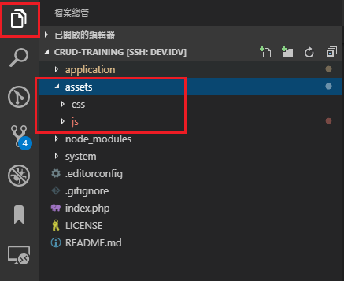
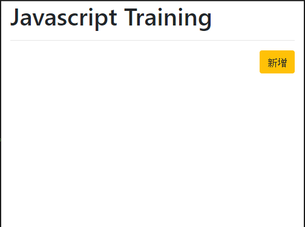
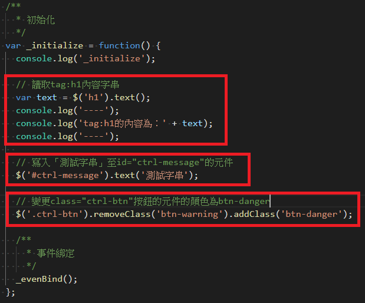
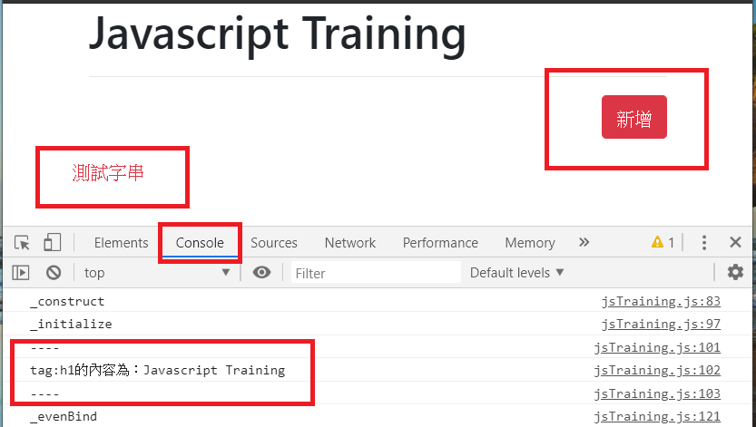
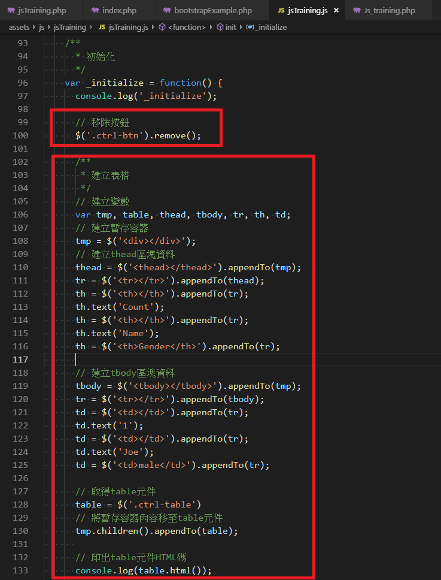
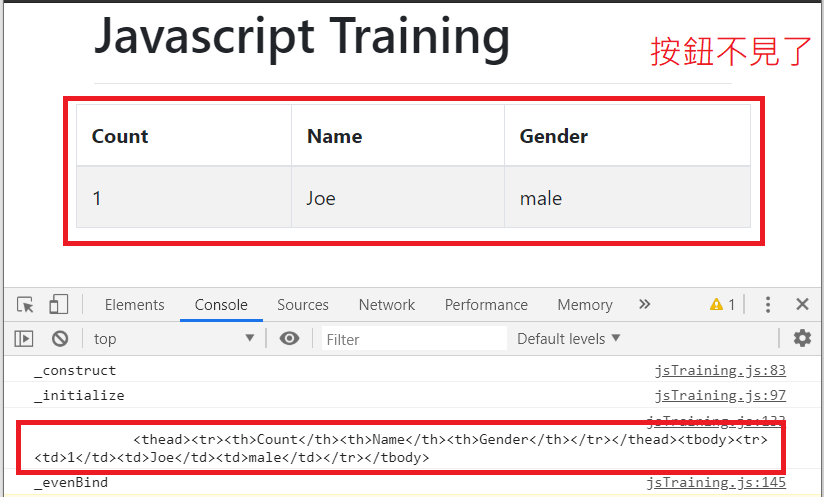
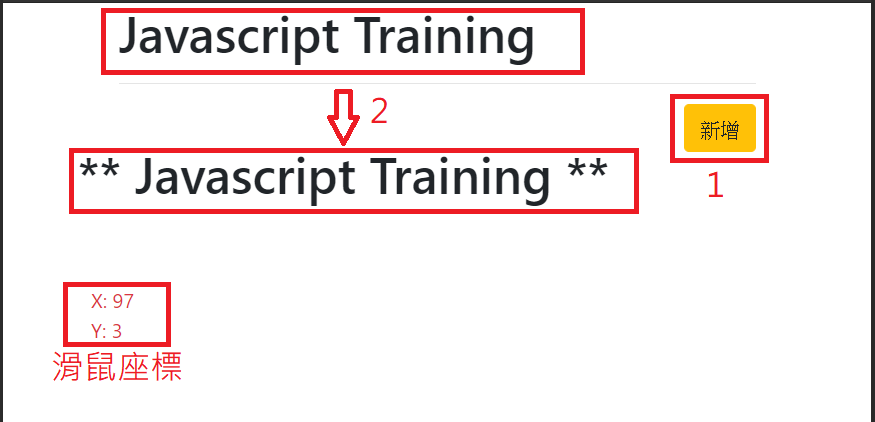
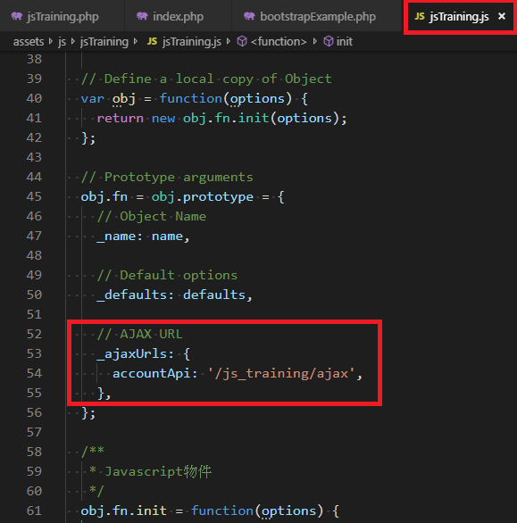
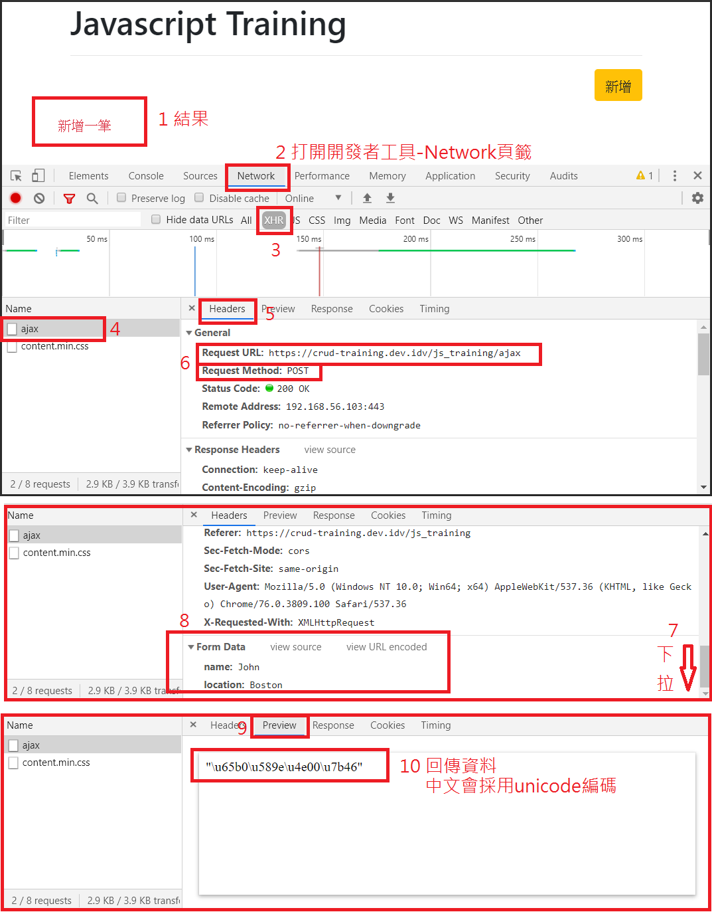
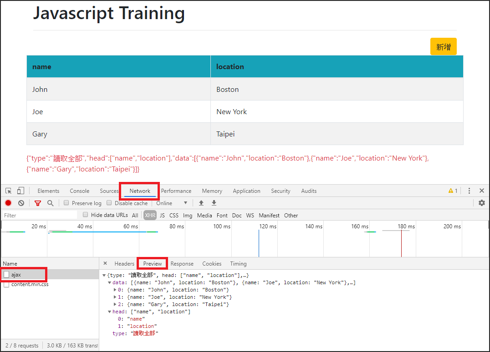

<!DOCTYPE html>
<html>
<head><meta name="generator" content="Hexo 3.8.0">
  <meta charset="utf-8">
  
  <title>CRUD表單設計 Day-04 Javascript | Mars&#39;s Blog</title>
  <meta name="viewport" content="width=device-width, initial-scale=1, maximum-scale=1">
  <meta name="description" content="一、說明「互動式網頁」概念由來已久，但實作的的方式一直不斷更新，如javascript, Java applet, flash, css等。其中Javscript支援度高、應用廣、學習容易，很不錯的語言。   在此透過jQuery來使用Javascript, AJAX 本文中採用Google Chrome瀏覽器及其開發人員工具   二、主要應用 選擇器(Selector) DOM控制 結構 事件">
<meta name="keywords" content="dev,javascript,web,php,training,ajax,jquery">
<meta property="og:type" content="article">
<meta property="og:title" content="CRUD表單設計 Day-04 Javascript">
<meta property="og:url" content="https://blog.mars-world.net/2019/08/18/crud-design-04/index.html">
<meta property="og:site_name" content="Mars&#39;s Blog">
<meta property="og:description" content="一、說明「互動式網頁」概念由來已久，但實作的的方式一直不斷更新，如javascript, Java applet, flash, css等。其中Javscript支援度高、應用廣、學習容易，很不錯的語言。   在此透過jQuery來使用Javascript, AJAX 本文中採用Google Chrome瀏覽器及其開發人員工具   二、主要應用 選擇器(Selector) DOM控制 結構 事件">
<meta property="og:locale" content="default">
<meta property="og:image" content="https://blog.mars-world.net/2019/08/18/crud-design-04/03-assets-path.png">
<meta property="og:image" content="https://blog.mars-world.net/2019/08/18/crud-design-04/03-page-result-01.png">
<meta property="og:image" content="https://blog.mars-world.net/2019/08/18/crud-design-04/04-selector-1.png">
<meta property="og:image" content="https://blog.mars-world.net/2019/08/18/crud-design-04/04-selector-2.png">
<meta property="og:image" content="https://blog.mars-world.net/2019/08/18/crud-design-04/05-dom-control-1.png">
<meta property="og:image" content="https://blog.mars-world.net/2019/08/18/crud-design-04/05-dom-control-2.png">
<meta property="og:image" content="https://blog.mars-world.net/2019/08/18/crud-design-04/05-dom-event.png">
<meta property="og:image" content="https://blog.mars-world.net/2019/08/18/crud-design-04/06-ajax-url.png">
<meta property="og:image" content="https://blog.mars-world.net/2019/08/18/crud-design-04/06-ajax-post-result.png">
<meta property="og:image" content="https://blog.mars-world.net/2019/08/18/crud-design-04/06-ajax-create-table.png">
<meta property="og:updated_time" content="2019-09-21T04:38:38.936Z">
<meta name="twitter:card" content="summary">
<meta name="twitter:title" content="CRUD表單設計 Day-04 Javascript">
<meta name="twitter:description" content="一、說明「互動式網頁」概念由來已久，但實作的的方式一直不斷更新，如javascript, Java applet, flash, css等。其中Javscript支援度高、應用廣、學習容易，很不錯的語言。   在此透過jQuery來使用Javascript, AJAX 本文中採用Google Chrome瀏覽器及其開發人員工具   二、主要應用 選擇器(Selector) DOM控制 結構 事件">
<meta name="twitter:image" content="https://blog.mars-world.net/2019/08/18/crud-design-04/03-assets-path.png">
  
  
  
    <link href="//fonts.googleapis.com/css?family=Source+Code+Pro" rel="stylesheet" type="text/css">
  

  <link rel="stylesheet" href="https://maxcdn.bootstrapcdn.com/bootstrap/3.3.6/css/bootstrap.min.css" integrity="sha384-1q8mTJOASx8j1Au+a5WDVnPi2lkFfwwEAa8hDDdjZlpLegxhjVME1fgjWPGmkzs7" crossorigin="anonymous">

  <link rel="stylesheet" href="https://maxcdn.bootstrapcdn.com/font-awesome/4.5.0/css/font-awesome.min.css" integrity="sha384-XdYbMnZ/QjLh6iI4ogqCTaIjrFk87ip+ekIjefZch0Y+PvJ8CDYtEs1ipDmPorQ+" crossorigin="anonymous">

  <link rel="stylesheet" href="/css/styles.css">
  

</head>
</html>
<body>
  <nav class="navbar navbar-inverse">
  <div class="container">
    <!-- Brand and toggle get grouped for better mobile display -->
    <div class="navbar-header">
      <button type="button" class="navbar-toggle collapsed" data-toggle="collapse" data-target="#main-menu-navbar" aria-expanded="false">
        <span class="sr-only">Toggle navigation</span>
        <span class="icon-bar"></span>
        <span class="icon-bar"></span>
        <span class="icon-bar"></span>
      </button>
      
    </div>

    <!-- Collect the nav links, forms, and other content for toggling -->
    <div class="collapse navbar-collapse" id="main-menu-navbar">
      <ul class="nav navbar-nav">
        
          <li><a class href="/index.html">Home</a></li>
        
          <li><a class href="/archives/">Archives</a></li>
        
          <li><a class href="https://github.com/marshung24">GitHub</a></li>
        
      </ul>

      <!--
      <ul class="nav navbar-nav navbar-right">
        
      </ul>
      -->
    </div><!-- /.navbar-collapse -->
  </div><!-- /.container-fluid -->
</nav>

  <div class="container">
    <div class="blog-header">
  <h1 class="blog-title">Mars&#39;s Blog</h1>
  
    <p class="lead blog-description">Mars&#39;s learning record</p>
  
</div>

    <div class="row">
        <div class="col-sm-8 blog-main">
          <article id="post-crud-design-04" class="article article-type-post" itemscope itemprop="blogPost">

  <header class="article-header">
    
  
    <h1 class="article-title" itemprop="name">
      CRUD表單設計 Day-04 Javascript
    </h1>
  


  </header>

  <div class="article-meta">
    <div class="article-datetime">
  <a href="/2019/08/18/crud-design-04/" class="article-date"><time datetime="2019-08-18T07:22:01.000Z" itemprop="datePublished">2019-08-18</time></a>
</div>

    <div class="article-author">Mars Hung</div>
    
  <div class="article-category">
    <a class="article-category-link" href="/categories/training/">training</a>
  </div>


    <div class="article-reading">
  
  <span id="busuanzi_container_page_pv">文章閱讀量<span id="busuanzi_value_page_pv"></span>次</span>
  
</div>

  </div>
  <div class="article-inner">

    <div class="article-entry" itemprop="articleBody">
      
        
<div id="toc">
    <ol class="toc"><li class="toc-item toc-level-1"><a class="toc-link" href="#一、說明"><span class="toc-text">一、說明</span></a></li><li class="toc-item toc-level-1"><a class="toc-link" href="#二、主要應用"><span class="toc-text">二、主要應用</span></a></li><li class="toc-item toc-level-1"><a class="toc-link" href="#三、練習模版"><span class="toc-text">三、練習模版</span></a><ol class="toc-child"><li class="toc-item toc-level-2"><a class="toc-link" href="#3-1-增加路徑常數"><span class="toc-text">3.1 增加路徑常數</span></a></li><li class="toc-item toc-level-2"><a class="toc-link" href="#3-2-建立Controller"><span class="toc-text">3.2 建立Controller</span></a></li><li class="toc-item toc-level-2"><a class="toc-link" href="#3-3-建立View"><span class="toc-text">3.3 建立View</span></a></li><li class="toc-item toc-level-2"><a class="toc-link" href="#3-4-建立JS檔"><span class="toc-text">3.4 建立JS檔</span></a></li><li class="toc-item toc-level-2"><a class="toc-link" href="#3-5-查看結果"><span class="toc-text">3.5 查看結果</span></a></li></ol></li><li class="toc-item toc-level-1"><a class="toc-link" href="#四、選擇器-jQuery-Selector"><span class="toc-text">四、選擇器(jQuery Selector)</span></a><ol class="toc-child"><li class="toc-item toc-level-2"><a class="toc-link" href="#4-1-使用tag-selector"><span class="toc-text">4.1 使用tag selector</span></a></li><li class="toc-item toc-level-2"><a class="toc-link" href="#4-2-使用id-selector"><span class="toc-text">4.2 使用id selector</span></a></li><li class="toc-item toc-level-2"><a class="toc-link" href="#4-3-使用class-selector"><span class="toc-text">4.3 使用class selector</span></a></li></ol></li><li class="toc-item toc-level-1"><a class="toc-link" href="#五、DOM控制"><span class="toc-text">五、DOM控制</span></a><ol class="toc-child"><li class="toc-item toc-level-2"><a class="toc-link" href="#5-1-結構"><span class="toc-text">5.1 結構</span></a><ol class="toc-child"><li class="toc-item toc-level-3"><a class="toc-link" href="#5-1-1-移除按鈕"><span class="toc-text">5.1.1 移除按鈕</span></a></li><li class="toc-item toc-level-3"><a class="toc-link" href="#5-1-2-建立表格"><span class="toc-text">5.1.2 建立表格</span></a></li></ol></li><li class="toc-item toc-level-2"><a class="toc-link" href="#5-2-事件"><span class="toc-text">5.2 事件</span></a><ol class="toc-child"><li class="toc-item toc-level-3"><a class="toc-link" href="#5-2-1-按下按鈕時，變更tag-h1文字為「-Javascript-Training-」"><span class="toc-text">5.2.1 按下按鈕時，變更tag:h1文字為「 Javascript Training 」</span></a></li><li class="toc-item toc-level-3"><a class="toc-link" href="#5-2-2-偵測滑鼠座標"><span class="toc-text">5.2.2 偵測滑鼠座標</span></a></li></ol></li></ol></li><li class="toc-item toc-level-1"><a class="toc-link" href="#六、AJAX"><span class="toc-text">六、AJAX</span></a><ol class="toc-child"><li class="toc-item toc-level-2"><a class="toc-link" href="#6-1-修改AJAX-server-side相關路徑"><span class="toc-text">6.1 修改AJAX server side相關路徑</span></a></li><li class="toc-item toc-level-2"><a class="toc-link" href="#6-2-建立伺服器端接收函式"><span class="toc-text">6.2 建立伺服器端接收函式</span></a></li><li class="toc-item toc-level-2"><a class="toc-link" href="#6-3-Create"><span class="toc-text">6.3 Create</span></a><ol class="toc-child"><li class="toc-item toc-level-3"><a class="toc-link" href="#6-3-1-程式碼"><span class="toc-text">6.3.1 程式碼</span></a></li><li class="toc-item toc-level-3"><a class="toc-link" href="#6-3-2查看結果"><span class="toc-text">6.3.2查看結果</span></a></li></ol></li><li class="toc-item toc-level-2"><a class="toc-link" href="#6-4-Read"><span class="toc-text">6.4 Read</span></a></li><li class="toc-item toc-level-2"><a class="toc-link" href="#6-5-Update"><span class="toc-text">6.5 Update</span></a></li><li class="toc-item toc-level-2"><a class="toc-link" href="#6-6-Delete"><span class="toc-text">6.6 Delete</span></a></li><li class="toc-item toc-level-2"><a class="toc-link" href="#6-7-資料交換要點"><span class="toc-text">6.7 資料交換要點</span></a></li></ol></li><li class="toc-item toc-level-1"><a class="toc-link" href="#七、參考"><span class="toc-text">七、參考</span></a><ol class="toc-child"><li class="toc-item toc-level-2"><a class="toc-link" href="#7-1-知識"><span class="toc-text">7.1 知識</span></a></li><li class="toc-item toc-level-2"><a class="toc-link" href="#7-2-官網"><span class="toc-text">7.2 官網</span></a></li><li class="toc-item toc-level-2"><a class="toc-link" href="#7-3-教程"><span class="toc-text">7.3 教程</span></a></li></ol></li></ol>
</div>

        <h1 id="一、說明"><a href="#一、說明" class="headerlink" title="一、說明"></a>一、說明</h1><p>「互動式網頁」概念由來已久，但實作的的方式一直不斷更新，如javascript, Java applet, flash, css等。其中Javscript支援度高、應用廣、學習容易，很不錯的語言。</p>
<blockquote>
<ul>
<li>在此透過jQuery來使用Javascript, AJAX</li>
<li>本文中採用Google Chrome瀏覽器及其開發人員工具</li>
</ul>
</blockquote>
<h1 id="二、主要應用"><a href="#二、主要應用" class="headerlink" title="二、主要應用"></a>二、主要應用</h1><ul>
<li>選擇器(Selector)</li>
<li>DOM控制<ul>
<li>結構</li>
<li>事件</li>
</ul>
</li>
<li>資料處理</li>
<li>AJAX</li>
</ul>
<h1 id="三、練習模版"><a href="#三、練習模版" class="headerlink" title="三、練習模版"></a>三、練習模版</h1><h2 id="3-1-增加路徑常數"><a href="#3-1-增加路徑常數" class="headerlink" title="3.1 增加路徑常數"></a>3.1 增加路徑常數</h2><ul>
<li><p>打開檔案<br>application/config/constants.php</p>
</li>
<li><p>加入設定</p>
<figure class="highlight php"><table><tr><td class="gutter"><pre><span class="line">1</span><br><span class="line">2</span><br><span class="line">3</span><br><span class="line">4</span><br><span class="line">5</span><br><span class="line">6</span><br></pre></td><td class="code"><pre><span class="line"><span class="comment">/**</span></span><br><span class="line"><span class="comment"> * System Path</span></span><br><span class="line"><span class="comment"> */</span></span><br><span class="line">define(<span class="string">'ASSETS'</span>, <span class="string">'/assets/'</span>);</span><br><span class="line">define(<span class="string">'CSS_DIR'</span>, ASSETS . <span class="string">'css/'</span>);</span><br><span class="line">define(<span class="string">'JS_DIR'</span>, ASSETS . <span class="string">'js/'</span>);</span><br></pre></td></tr></table></figure>
</li>
<li><p>建立資料夾<br>assets/js/<br>assets/css/</p>
<p></p>
</li>
</ul>
<h2 id="3-2-建立Controller"><a href="#3-2-建立Controller" class="headerlink" title="3.2 建立Controller"></a>3.2 建立Controller</h2><ul>
<li><p>新增檔案<br>application/controllers/Js_training.php</p>
</li>
<li><p>寫入內容</p>
<figure class="highlight php"><table><tr><td class="gutter"><pre><span class="line">1</span><br><span class="line">2</span><br><span class="line">3</span><br><span class="line">4</span><br><span class="line">5</span><br><span class="line">6</span><br><span class="line">7</span><br><span class="line">8</span><br><span class="line">9</span><br><span class="line">10</span><br><span class="line">11</span><br><span class="line">12</span><br><span class="line">13</span><br><span class="line">14</span><br></pre></td><td class="code"><pre><span class="line"><span class="meta">&lt;?php</span></span><br><span class="line">defined(<span class="string">'BASEPATH'</span>) <span class="keyword">or</span> <span class="keyword">exit</span>(<span class="string">'No direct script access allowed'</span>);</span><br><span class="line"></span><br><span class="line"><span class="class"><span class="keyword">class</span> <span class="title">Js_training</span> <span class="keyword">extends</span> <span class="title">CI_Controller</span></span></span><br><span class="line"><span class="class"></span>&#123;</span><br><span class="line"></span><br><span class="line">	<span class="comment">/**</span></span><br><span class="line"><span class="comment">	 * Index Page for this controller.</span></span><br><span class="line"><span class="comment">	 */</span></span><br><span class="line">	<span class="keyword">public</span> <span class="function"><span class="keyword">function</span> <span class="title">index</span><span class="params">()</span></span></span><br><span class="line"><span class="function">	</span>&#123;</span><br><span class="line">		<span class="keyword">$this</span>-&gt;load-&gt;view(<span class="string">'jsTraining'</span>);</span><br><span class="line">	&#125;</span><br><span class="line">&#125;</span><br></pre></td></tr></table></figure>
</li>
</ul>
<h2 id="3-3-建立View"><a href="#3-3-建立View" class="headerlink" title="3.3 建立View"></a>3.3 建立View</h2><ul>
<li><p>新增檔案<br>application/views/jsTraining.php</p>
<blockquote>
<p>以此為HTML練習模版</p>
</blockquote>
</li>
<li><p>寫入內容</p>
<figure class="highlight html"><table><tr><td class="gutter"><pre><span class="line">1</span><br><span class="line">2</span><br><span class="line">3</span><br><span class="line">4</span><br><span class="line">5</span><br><span class="line">6</span><br><span class="line">7</span><br><span class="line">8</span><br><span class="line">9</span><br><span class="line">10</span><br><span class="line">11</span><br><span class="line">12</span><br><span class="line">13</span><br><span class="line">14</span><br><span class="line">15</span><br><span class="line">16</span><br><span class="line">17</span><br><span class="line">18</span><br><span class="line">19</span><br><span class="line">20</span><br><span class="line">21</span><br><span class="line">22</span><br><span class="line">23</span><br><span class="line">24</span><br><span class="line">25</span><br><span class="line">26</span><br><span class="line">27</span><br><span class="line">28</span><br><span class="line">29</span><br><span class="line">30</span><br><span class="line">31</span><br><span class="line">32</span><br><span class="line">33</span><br><span class="line">34</span><br><span class="line">35</span><br><span class="line">36</span><br><span class="line">37</span><br><span class="line">38</span><br><span class="line">39</span><br><span class="line">40</span><br><span class="line">41</span><br><span class="line">42</span><br><span class="line">43</span><br><span class="line">44</span><br><span class="line">45</span><br><span class="line">46</span><br><span class="line">47</span><br><span class="line">48</span><br><span class="line">49</span><br><span class="line">50</span><br><span class="line">51</span><br></pre></td><td class="code"><pre><span class="line"><span class="php"><span class="meta">&lt;?php</span></span></span><br><span class="line"><span class="php">defined(<span class="string">'BASEPATH'</span>) <span class="keyword">or</span> <span class="keyword">exit</span>(<span class="string">'No direct script access allowed'</span>);</span></span><br><span class="line"><span class="php"><span class="meta">?&gt;</span></span></span><br><span class="line"><span class="meta">&lt;!DOCTYPE html&gt;</span></span><br><span class="line"><span class="tag">&lt;<span class="name">html</span> <span class="attr">lang</span>=<span class="string">"en"</span>&gt;</span></span><br><span class="line"></span><br><span class="line"><span class="tag">&lt;<span class="name">head</span>&gt;</span></span><br><span class="line">	<span class="tag">&lt;<span class="name">title</span>&gt;</span>Bootstrap 4 Example<span class="tag">&lt;/<span class="name">title</span>&gt;</span></span><br><span class="line">	<span class="tag">&lt;<span class="name">meta</span> <span class="attr">charset</span>=<span class="string">"utf-8"</span>&gt;</span></span><br><span class="line">	<span class="tag">&lt;<span class="name">meta</span> <span class="attr">name</span>=<span class="string">"viewport"</span> <span class="attr">content</span>=<span class="string">"width=device-width, initial-scale=1"</span>&gt;</span></span><br><span class="line">	<span class="tag">&lt;<span class="name">link</span> <span class="attr">rel</span>=<span class="string">"stylesheet"</span> <span class="attr">href</span>=<span class="string">"/node_modules/bootstrap/dist/css/bootstrap.min.css"</span>&gt;</span></span><br><span class="line">	<span class="tag">&lt;<span class="name">script</span> <span class="attr">src</span>=<span class="string">"/node_modules/jquery/dist/jquery.min.js"</span>&gt;</span><span class="undefined"></span><span class="tag">&lt;/<span class="name">script</span>&gt;</span></span><br><span class="line">	<span class="tag">&lt;<span class="name">script</span> <span class="attr">src</span>=<span class="string">"/node_modules/bootstrap/dist/js/bootstrap.min.js"</span>&gt;</span><span class="undefined"></span><span class="tag">&lt;/<span class="name">script</span>&gt;</span></span><br><span class="line">	<span class="comment">&lt;!-- Font Awesome Icon --&gt;</span></span><br><span class="line">	<span class="tag">&lt;<span class="name">link</span> <span class="attr">rel</span>=<span class="string">"stylesheet"</span> <span class="attr">href</span>=<span class="string">"https://cdnjs.cloudflare.com/ajax/libs/font-awesome/5.9.0/css/all.min.css"</span> /&gt;</span></span><br><span class="line"></span><br><span class="line">	<span class="tag">&lt;<span class="name">script</span> <span class="attr">src</span>=<span class="string">"&lt;?= JS_DIR; ?&gt;jsTraining/jsTraining.js"</span>&gt;</span><span class="undefined"></span><span class="tag">&lt;/<span class="name">script</span>&gt;</span></span><br><span class="line"><span class="tag">&lt;/<span class="name">head</span>&gt;</span></span><br><span class="line"></span><br><span class="line"><span class="tag">&lt;<span class="name">body</span>&gt;</span></span><br><span class="line"></span><br><span class="line">	<span class="tag">&lt;<span class="name">div</span> <span class="attr">class</span>=<span class="string">"container"</span>&gt;</span></span><br><span class="line">		<span class="comment">&lt;!-- Title --&gt;</span></span><br><span class="line">		<span class="tag">&lt;<span class="name">div</span> <span class="attr">class</span>=<span class="string">"row"</span>&gt;</span></span><br><span class="line">			<span class="tag">&lt;<span class="name">div</span> <span class="attr">class</span>=<span class="string">"col-sm-12"</span>&gt;</span></span><br><span class="line">				<span class="tag">&lt;<span class="name">h1</span>&gt;</span>Javascript Training<span class="tag">&lt;/<span class="name">h1</span>&gt;</span></span><br><span class="line">				<span class="tag">&lt;<span class="name">hr</span>&gt;</span></span><br><span class="line">			<span class="tag">&lt;/<span class="name">div</span>&gt;</span></span><br><span class="line">		<span class="tag">&lt;/<span class="name">div</span>&gt;</span></span><br><span class="line"></span><br><span class="line">		<span class="comment">&lt;!-- Controll Form --&gt;</span></span><br><span class="line">		<span class="tag">&lt;<span class="name">div</span> <span class="attr">class</span>=<span class="string">"row"</span>&gt;</span></span><br><span class="line">			<span class="tag">&lt;<span class="name">div</span> <span class="attr">class</span>=<span class="string">"col-sm-12"</span>&gt;</span><span class="tag">&lt;<span class="name">button</span> <span class="attr">class</span>=<span class="string">"btn btn-warning float-right ctrl-btn"</span>&gt;</span>新增<span class="tag">&lt;/<span class="name">button</span>&gt;</span><span class="tag">&lt;/<span class="name">div</span>&gt;</span></span><br><span class="line">		<span class="tag">&lt;/<span class="name">div</span>&gt;</span></span><br><span class="line"></span><br><span class="line">		<span class="comment">&lt;!-- Table --&gt;</span></span><br><span class="line">		<span class="tag">&lt;<span class="name">div</span> <span class="attr">class</span>=<span class="string">"row"</span>&gt;</span></span><br><span class="line">			<span class="tag">&lt;<span class="name">table</span> <span class="attr">class</span>=<span class="string">"table table-striped table-bordered table-hover ctrl-table"</span>&gt;</span></span><br><span class="line">			<span class="tag">&lt;/<span class="name">table</span>&gt;</span></span><br><span class="line">		<span class="tag">&lt;/<span class="name">div</span>&gt;</span></span><br><span class="line"></span><br><span class="line">		<span class="comment">&lt;!-- Message box --&gt;</span></span><br><span class="line">		<span class="tag">&lt;<span class="name">div</span> <span class="attr">class</span>=<span class="string">"row"</span>&gt;</span></span><br><span class="line">			<span class="tag">&lt;<span class="name">div</span> <span class="attr">id</span>=<span class="string">"ctrl-message"</span> <span class="attr">class</span>=<span class="string">"text-danger ctrl-message"</span>&gt;</span><span class="tag">&lt;/<span class="name">div</span>&gt;</span></span><br><span class="line">		<span class="tag">&lt;/<span class="name">div</span>&gt;</span></span><br><span class="line"></span><br><span class="line">	<span class="tag">&lt;/<span class="name">div</span>&gt;</span></span><br><span class="line"></span><br><span class="line"><span class="tag">&lt;/<span class="name">body</span>&gt;</span></span><br><span class="line"></span><br><span class="line"><span class="tag">&lt;/<span class="name">html</span>&gt;</span></span><br></pre></td></tr></table></figure>
</li>
</ul>
<h2 id="3-4-建立JS檔"><a href="#3-4-建立JS檔" class="headerlink" title="3.4 建立JS檔"></a>3.4 建立JS檔</h2><ul>
<li><p>新增檔案<br>application/assets/jsTraining/jsTraining.js</p>
</li>
<li><p>寫入內容</p>
<figure class="highlight javascript"><table><tr><td class="gutter"><pre><span class="line">1</span><br><span class="line">2</span><br><span class="line">3</span><br><span class="line">4</span><br><span class="line">5</span><br><span class="line">6</span><br><span class="line">7</span><br><span class="line">8</span><br><span class="line">9</span><br><span class="line">10</span><br><span class="line">11</span><br><span class="line">12</span><br><span class="line">13</span><br><span class="line">14</span><br><span class="line">15</span><br><span class="line">16</span><br><span class="line">17</span><br><span class="line">18</span><br><span class="line">19</span><br><span class="line">20</span><br><span class="line">21</span><br><span class="line">22</span><br><span class="line">23</span><br><span class="line">24</span><br><span class="line">25</span><br><span class="line">26</span><br><span class="line">27</span><br><span class="line">28</span><br><span class="line">29</span><br><span class="line">30</span><br><span class="line">31</span><br><span class="line">32</span><br><span class="line">33</span><br><span class="line">34</span><br><span class="line">35</span><br><span class="line">36</span><br><span class="line">37</span><br><span class="line">38</span><br><span class="line">39</span><br><span class="line">40</span><br><span class="line">41</span><br><span class="line">42</span><br><span class="line">43</span><br><span class="line">44</span><br><span class="line">45</span><br><span class="line">46</span><br><span class="line">47</span><br><span class="line">48</span><br><span class="line">49</span><br><span class="line">50</span><br><span class="line">51</span><br><span class="line">52</span><br><span class="line">53</span><br><span class="line">54</span><br><span class="line">55</span><br><span class="line">56</span><br><span class="line">57</span><br><span class="line">58</span><br><span class="line">59</span><br><span class="line">60</span><br><span class="line">61</span><br><span class="line">62</span><br><span class="line">63</span><br><span class="line">64</span><br><span class="line">65</span><br><span class="line">66</span><br><span class="line">67</span><br><span class="line">68</span><br><span class="line">69</span><br><span class="line">70</span><br><span class="line">71</span><br><span class="line">72</span><br><span class="line">73</span><br><span class="line">74</span><br><span class="line">75</span><br><span class="line">76</span><br><span class="line">77</span><br><span class="line">78</span><br><span class="line">79</span><br><span class="line">80</span><br><span class="line">81</span><br><span class="line">82</span><br><span class="line">83</span><br><span class="line">84</span><br><span class="line">85</span><br><span class="line">86</span><br><span class="line">87</span><br><span class="line">88</span><br><span class="line">89</span><br><span class="line">90</span><br><span class="line">91</span><br><span class="line">92</span><br><span class="line">93</span><br><span class="line">94</span><br><span class="line">95</span><br><span class="line">96</span><br><span class="line">97</span><br><span class="line">98</span><br><span class="line">99</span><br><span class="line">100</span><br><span class="line">101</span><br><span class="line">102</span><br><span class="line">103</span><br><span class="line">104</span><br><span class="line">105</span><br><span class="line">106</span><br><span class="line">107</span><br><span class="line">108</span><br><span class="line">109</span><br><span class="line">110</span><br><span class="line">111</span><br><span class="line">112</span><br><span class="line">113</span><br><span class="line">114</span><br><span class="line">115</span><br><span class="line">116</span><br><span class="line">117</span><br><span class="line">118</span><br><span class="line">119</span><br><span class="line">120</span><br><span class="line">121</span><br><span class="line">122</span><br><span class="line">123</span><br><span class="line">124</span><br><span class="line">125</span><br><span class="line">126</span><br><span class="line">127</span><br><span class="line">128</span><br><span class="line">129</span><br><span class="line">130</span><br><span class="line">131</span><br><span class="line">132</span><br><span class="line">133</span><br><span class="line">134</span><br><span class="line">135</span><br><span class="line">136</span><br><span class="line">137</span><br><span class="line">138</span><br><span class="line">139</span><br><span class="line">140</span><br><span class="line">141</span><br><span class="line">142</span><br><span class="line">143</span><br><span class="line">144</span><br><span class="line">145</span><br><span class="line">146</span><br><span class="line">147</span><br><span class="line">148</span><br><span class="line">149</span><br><span class="line">150</span><br><span class="line">151</span><br><span class="line">152</span><br><span class="line">153</span><br><span class="line">154</span><br><span class="line">155</span><br><span class="line">156</span><br><span class="line">157</span><br><span class="line">158</span><br><span class="line">159</span><br><span class="line">160</span><br><span class="line">161</span><br><span class="line">162</span><br><span class="line">163</span><br><span class="line">164</span><br></pre></td><td class="code"><pre><span class="line"><span class="comment">/**</span></span><br><span class="line"><span class="comment"> * 說明：</span></span><br><span class="line"><span class="comment"> * &lt;li&gt;1. 頁面函式只會初始化一次</span></span><br><span class="line"><span class="comment"> * &lt;li&gt;2. 如果是多頁面組合時，可能被其他頁面呼叫，因此需使用namespane:Page，以方便外部呼叫或試調</span></span><br><span class="line"><span class="comment"> * </span></span><br><span class="line"><span class="comment"> * 執行順序：</span></span><br><span class="line"><span class="comment"> * 1. 註冊$(document).ready()函式，但先不執行</span></span><br><span class="line"><span class="comment"> * 2. $(document).ready()之外的程式碼依序執行 - 建構變數、函式obj</span></span><br><span class="line"><span class="comment"> * 3. 執行$(document).ready()內註冊的函式</span></span><br><span class="line"><span class="comment"> * 4. 確定window.Page是否存在，不存在則初始化</span></span><br><span class="line"><span class="comment"> * 5. 執行obj()物件，並將結果存入window.Page[name]</span></span><br><span class="line"><span class="comment"> * 6. obj()回傳內容為 new obj.fn.init(options);</span></span><br><span class="line"><span class="comment"> * 7. 實例化obj.fn.init(options);並在最後執行函式 _construct(_options);</span></span><br><span class="line"><span class="comment"> */</span></span><br><span class="line"></span><br><span class="line"><span class="comment">// IIFE 立即執行函式</span></span><br><span class="line">(<span class="function"><span class="keyword">function</span>(<span class="params">window, document, $, undefined</span>) </span>&#123;</span><br><span class="line">  <span class="comment">// 使用嚴格模式</span></span><br><span class="line"><span class="meta">  'use strict'</span>;</span><br><span class="line"></span><br><span class="line">  <span class="comment">// DOM下載完後執行</span></span><br><span class="line">  $(<span class="built_in">document</span>).ready(<span class="function"><span class="keyword">function</span>(<span class="params"></span>) </span>&#123;</span><br><span class="line">    <span class="comment">// init this page</span></span><br><span class="line">    <span class="built_in">window</span>.Page = <span class="built_in">window</span>.Page || <span class="keyword">new</span> <span class="function"><span class="keyword">function</span>(<span class="params"></span>) </span>&#123;&#125;();</span><br><span class="line">    <span class="built_in">window</span>.Page[name] = obj();</span><br><span class="line">  &#125;);</span><br><span class="line"></span><br><span class="line">  <span class="comment">// Class Name</span></span><br><span class="line">  <span class="keyword">var</span> name = <span class="string">'&#123;name&#125;'</span>;</span><br><span class="line">  <span class="comment">// Version</span></span><br><span class="line">  <span class="keyword">var</span> version = <span class="string">'&#123;version&#125;'</span>;</span><br><span class="line">  <span class="comment">// Default options</span></span><br><span class="line">  <span class="keyword">var</span> defaults = &#123;&#125;;</span><br><span class="line"></span><br><span class="line">  <span class="comment">/**</span></span><br><span class="line"><span class="comment">    * *************** Object Build ***************</span></span><br><span class="line"><span class="comment">    */</span></span><br><span class="line"></span><br><span class="line">  <span class="comment">// Define a local copy of Object</span></span><br><span class="line">  <span class="keyword">var</span> obj = <span class="function"><span class="keyword">function</span>(<span class="params">options</span>) </span>&#123;</span><br><span class="line">    <span class="keyword">return</span> <span class="keyword">new</span> obj.fn.init(options);</span><br><span class="line">  &#125;;</span><br><span class="line"></span><br><span class="line">  <span class="comment">// Prototype arguments</span></span><br><span class="line">  obj.fn = obj.prototype = &#123;</span><br><span class="line">    <span class="comment">// Object Name</span></span><br><span class="line">    _name: name,</span><br><span class="line"></span><br><span class="line">    <span class="comment">// Default options</span></span><br><span class="line">    _defaults: defaults,</span><br><span class="line"></span><br><span class="line">    <span class="comment">// AJAX URL</span></span><br><span class="line">    _ajaxUrls: &#123;</span><br><span class="line">      list: <span class="string">'/controller_group_forder/controller/ajax'</span>,</span><br><span class="line">      edit: <span class="string">'/controller_group_forder/controller_edit/ajax'</span>,</span><br><span class="line">    &#125;,</span><br><span class="line">  &#125;;</span><br><span class="line"></span><br><span class="line">  <span class="comment">/**</span></span><br><span class="line"><span class="comment">    * Javascript物件</span></span><br><span class="line"><span class="comment">    */</span></span><br><span class="line">  obj.fn.init = <span class="function"><span class="keyword">function</span>(<span class="params">options</span>) </span>&#123;</span><br><span class="line">    <span class="comment">/**</span></span><br><span class="line"><span class="comment">      * *************** Object Argument Setting ***************</span></span><br><span class="line"><span class="comment">      */</span></span><br><span class="line">    <span class="keyword">var</span> self = <span class="keyword">this</span>;</span><br><span class="line">    <span class="keyword">var</span> _options = options || &#123;&#125;;</span><br><span class="line">    <span class="comment">// Ajax Response - jqXHR(s)</span></span><br><span class="line">    <span class="keyword">var</span> _jqXHRs;</span><br><span class="line"></span><br><span class="line">    <span class="comment">/**</span></span><br><span class="line"><span class="comment">      * *************** 屬性設定 ***************</span></span><br><span class="line"><span class="comment">      */</span></span><br><span class="line"></span><br><span class="line">    <span class="comment">/**</span></span><br><span class="line"><span class="comment">      * *************** 物件必要函式 ***************</span></span><br><span class="line"><span class="comment">      */</span></span><br><span class="line"></span><br><span class="line">    <span class="comment">/**</span></span><br><span class="line"><span class="comment">      * 建構子</span></span><br><span class="line"><span class="comment">      */</span></span><br><span class="line">    <span class="keyword">var</span> _construct = <span class="function"><span class="keyword">function</span>(<span class="params"></span>) </span>&#123;</span><br><span class="line">      <span class="built_in">console</span>.log(<span class="string">'_construct'</span>);</span><br><span class="line"></span><br><span class="line">      _initialize();</span><br><span class="line">    &#125;;</span><br><span class="line"></span><br><span class="line">    <span class="comment">/**</span></span><br><span class="line"><span class="comment">      * 解構子</span></span><br><span class="line"><span class="comment">      */</span></span><br><span class="line">    <span class="keyword">var</span> _destruct = <span class="function"><span class="keyword">function</span>(<span class="params"></span>) </span>&#123;&#125;;</span><br><span class="line"></span><br><span class="line">    <span class="comment">/**</span></span><br><span class="line"><span class="comment">      * 初始化</span></span><br><span class="line"><span class="comment">      */</span></span><br><span class="line">    <span class="keyword">var</span> _initialize = <span class="function"><span class="keyword">function</span>(<span class="params"></span>) </span>&#123;</span><br><span class="line">      <span class="built_in">console</span>.log(<span class="string">'_initialize'</span>);</span><br><span class="line"></span><br><span class="line">      <span class="comment">/**</span></span><br><span class="line"><span class="comment">        * 事件綁定</span></span><br><span class="line"><span class="comment">        */</span></span><br><span class="line">      _evenBind();</span><br><span class="line">    &#125;;</span><br><span class="line"></span><br><span class="line">    <span class="comment">/**</span></span><br><span class="line"><span class="comment">      * 事件綁定</span></span><br><span class="line"><span class="comment">      */</span></span><br><span class="line">    <span class="keyword">var</span> _evenBind = <span class="function"><span class="keyword">function</span>(<span class="params"></span>) </span>&#123;</span><br><span class="line">      <span class="built_in">console</span>.log(<span class="string">'_evenBind'</span>);</span><br><span class="line"></span><br><span class="line">      <span class="comment">/**</span></span><br><span class="line"><span class="comment">        * 事件 - 增加</span></span><br><span class="line"><span class="comment">        */</span></span><br><span class="line"></span><br><span class="line">      <span class="comment">/**</span></span><br><span class="line"><span class="comment">        * 事件 - 清除規</span></span><br><span class="line"><span class="comment">        */</span></span><br><span class="line">    &#125;;</span><br><span class="line"></span><br><span class="line">    <span class="comment">/**</span></span><br><span class="line"><span class="comment">      * *************** 功能函式 ***************</span></span><br><span class="line"><span class="comment">      */</span></span><br><span class="line"></span><br><span class="line">    <span class="comment">/**</span></span><br><span class="line"><span class="comment">      * *************** 事件函式 ***************</span></span><br><span class="line"><span class="comment">      */</span></span><br><span class="line"></span><br><span class="line">    <span class="comment">/**</span></span><br><span class="line"><span class="comment">      * 事件 - 送出</span></span><br><span class="line"><span class="comment">      */</span></span><br><span class="line">    <span class="keyword">var</span> _submit = <span class="function"><span class="keyword">function</span>(<span class="params">e</span>) </span>&#123;</span><br><span class="line">      <span class="keyword">return</span> <span class="keyword">this</span>;</span><br><span class="line">    &#125;;</span><br><span class="line"></span><br><span class="line">    <span class="comment">/**</span></span><br><span class="line"><span class="comment">      * 事件 - 清除</span></span><br><span class="line"><span class="comment">      */</span></span><br><span class="line">    <span class="keyword">var</span> _clear = <span class="function"><span class="keyword">function</span>(<span class="params">e</span>) </span>&#123;</span><br><span class="line">      <span class="keyword">return</span> <span class="keyword">this</span>;</span><br><span class="line">    &#125;;</span><br><span class="line"></span><br><span class="line">    <span class="comment">/**</span></span><br><span class="line"><span class="comment">      * 事件 - 增加</span></span><br><span class="line"><span class="comment">      */</span></span><br><span class="line">    <span class="keyword">var</span> _add = <span class="function"><span class="keyword">function</span>(<span class="params">e</span>) </span>&#123;</span><br><span class="line">      <span class="keyword">return</span> <span class="keyword">this</span>;</span><br><span class="line">    &#125;;</span><br><span class="line"></span><br><span class="line">    <span class="comment">/**</span></span><br><span class="line"><span class="comment">      * *************** 私有函式 ***************</span></span><br><span class="line"><span class="comment">      */</span></span><br><span class="line"></span><br><span class="line">    <span class="comment">/**</span></span><br><span class="line"><span class="comment">      * *************** Run Constructor ***************</span></span><br><span class="line"><span class="comment">      */</span></span><br><span class="line">    _construct();</span><br><span class="line">  &#125;;</span><br><span class="line"></span><br><span class="line">  <span class="comment">// Give the init function the Object prototype for later instantiation</span></span><br><span class="line">  obj.fn.init.prototype = obj.prototype;</span><br><span class="line"></span><br><span class="line">  <span class="comment">// Alias prototype function</span></span><br><span class="line">  $.extend(obj, obj.fn);</span><br><span class="line">&#125;)(<span class="built_in">window</span>, <span class="built_in">document</span>, $);</span><br></pre></td></tr></table></figure>
</li>
</ul>
<blockquote>
<p>物件化Javascript模版</p>
</blockquote>
<h2 id="3-5-查看結果"><a href="#3-5-查看結果" class="headerlink" title="3.5 查看結果"></a>3.5 查看結果</h2><ul>
<li>前往網址：<a href="https://crud-training.dev.idv/js_training" target="_blank" rel="noopener">https://crud-training.dev.idv/js_training</a><br><blockquote>
<p>練習用頁面建構完成</p>
</blockquote>
</li>
</ul>
<h1 id="四、選擇器-jQuery-Selector"><a href="#四、選擇器-jQuery-Selector" class="headerlink" title="四、選擇器(jQuery Selector)"></a>四、選擇器(jQuery Selector)</h1><p>使用tag, id, class取得DOM，並讀取物件內容</p>
<h2 id="4-1-使用tag-selector"><a href="#4-1-使用tag-selector" class="headerlink" title="4.1 使用tag selector"></a>4.1 使用tag selector</h2><p>讀取tag:h1內容字串<br>在函式 _initialize 中寫入下列程式碼後，按ctrl+F5重整網頁<br><figure class="highlight javascript"><table><tr><td class="gutter"><pre><span class="line">1</span><br><span class="line">2</span><br><span class="line">3</span><br><span class="line">4</span><br><span class="line">5</span><br><span class="line">6</span><br></pre></td><td class="code"><pre><span class="line"><span class="comment">// 讀取tag:h1內容字串</span></span><br><span class="line"><span class="keyword">var</span> text = $(<span class="string">'h1'</span>).text();</span><br><span class="line"><span class="comment">// 在DevTools的console介面中印出</span></span><br><span class="line"><span class="built_in">console</span>.log(<span class="string">'----'</span>);</span><br><span class="line"><span class="built_in">console</span>.log(<span class="string">'tag:h1的內容為：'</span> + text);</span><br><span class="line"><span class="built_in">console</span>.log(<span class="string">'----'</span>);</span><br></pre></td></tr></table></figure></p>
<blockquote>
<ul>
<li>按F12打開「開發人員工具」，移到console頁籤</li>
<li>JS翻釋：使用tag選擇器尋找名為h1的元件，並取得元件內容字串</li>
<li>tag為HTML標籤名稱，參考文件 <a href="https://www.w3schools.com/html/" target="_blank" rel="noopener">HTML5 Tutorial</a></li>
</ul>
</blockquote>
<h2 id="4-2-使用id-selector"><a href="#4-2-使用id-selector" class="headerlink" title="4.2 使用id selector"></a>4.2 使用id selector</h2><p>寫入「測試字串」至id=”ctrl-message”的元件<br>在函式 _initialize 中寫入下列程式碼後，按ctrl+F5重整網頁<br><figure class="highlight javascript"><table><tr><td class="gutter"><pre><span class="line">1</span><br><span class="line">2</span><br></pre></td><td class="code"><pre><span class="line"><span class="comment">// 寫入「測試字串」至id="ctrl-message"的元件</span></span><br><span class="line">$(<span class="string">'#ctrl-message'</span>).text(<span class="string">'測試字串'</span>);</span><br></pre></td></tr></table></figure></p>
<blockquote>
<ul>
<li>JS翻釋：使用ID選擇器(#)尋找id為ctrl-message的元件，並將字串「測試字串」寫入元件內容</li>
</ul>
</blockquote>
<h2 id="4-3-使用class-selector"><a href="#4-3-使用class-selector" class="headerlink" title="4.3 使用class selector"></a>4.3 使用class selector</h2><p>變更class=”ctrl-btn”按鈕的元件的顏色為btn-danger<br>在函式 _initialize 中寫入下列程式碼後，按ctrl+F5重整網頁<br><figure class="highlight javascript"><table><tr><td class="gutter"><pre><span class="line">1</span><br><span class="line">2</span><br></pre></td><td class="code"><pre><span class="line"><span class="comment">// 變更class="ctrl-btn"按鈕的元件的顏色為btn-danger</span></span><br><span class="line">$(<span class="string">'.ctrl-btn'</span>).removeClass(<span class="string">'btn-warning'</span>).addClass(<span class="string">'btn-danger'</span>);</span><br></pre></td></tr></table></figure></p>
<blockquote>
<ul>
<li>JS翻釋：使用class選擇器(.)尋找含有class為ctrl-btn的元件，並移除class btn-warning、增加class btn-danger</li>
</ul>
</blockquote>
<p><br></p>
<blockquote>
<ul>
<li>Selector是極為重要的基礎</li>
<li>參考文件：<a href="https://www.w3schools.com/jquery/jquery_ref_selectors.asp" target="_blank" rel="noopener">jQuery Selectors</a></li>
</ul>
</blockquote>
<h1 id="五、DOM控制"><a href="#五、DOM控制" class="headerlink" title="五、DOM控制"></a>五、DOM控制</h1><h2 id="5-1-結構"><a href="#5-1-結構" class="headerlink" title="5.1 結構"></a>5.1 結構</h2><h3 id="5-1-1-移除按鈕"><a href="#5-1-1-移除按鈕" class="headerlink" title="5.1.1 移除按鈕"></a>5.1.1 移除按鈕</h3><p>在函式 _initialize 中寫入下列程式碼後，按ctrl+F5重整網頁<br><figure class="highlight javascript"><table><tr><td class="gutter"><pre><span class="line">1</span><br><span class="line">2</span><br></pre></td><td class="code"><pre><span class="line"><span class="comment">// 移除按鈕</span></span><br><span class="line">$(<span class="string">'.ctrl-btn'</span>).remove();</span><br></pre></td></tr></table></figure></p>
<blockquote>
<ul>
<li>JS翻釋：使用class選擇器(.)尋找含有class為ctrl-btn的元件，並移除該元件</li>
</ul>
</blockquote>
<h3 id="5-1-2-建立表格"><a href="#5-1-2-建立表格" class="headerlink" title="5.1.2 建立表格"></a>5.1.2 建立表格</h3><p>在函式 _initialize 中寫入下列程式碼後，按ctrl+F5重整網頁<br><figure class="highlight javascript"><table><tr><td class="gutter"><pre><span class="line">1</span><br><span class="line">2</span><br><span class="line">3</span><br><span class="line">4</span><br><span class="line">5</span><br><span class="line">6</span><br><span class="line">7</span><br><span class="line">8</span><br><span class="line">9</span><br><span class="line">10</span><br><span class="line">11</span><br><span class="line">12</span><br><span class="line">13</span><br><span class="line">14</span><br><span class="line">15</span><br><span class="line">16</span><br><span class="line">17</span><br><span class="line">18</span><br><span class="line">19</span><br><span class="line">20</span><br><span class="line">21</span><br><span class="line">22</span><br><span class="line">23</span><br><span class="line">24</span><br><span class="line">25</span><br><span class="line">26</span><br><span class="line">27</span><br><span class="line">28</span><br><span class="line">29</span><br><span class="line">30</span><br><span class="line">31</span><br><span class="line">32</span><br><span class="line">33</span><br><span class="line">34</span><br><span class="line">35</span><br></pre></td><td class="code"><pre><span class="line"><span class="comment">/**</span></span><br><span class="line"><span class="comment"> * 建立表格</span></span><br><span class="line"><span class="comment"> */</span></span><br><span class="line"><span class="comment">// 建立變數</span></span><br><span class="line"><span class="keyword">var</span> tmp, table, thead, tbody, tr, th, td;</span><br><span class="line"><span class="comment">// 建立暫存容器</span></span><br><span class="line">tmp = $(<span class="string">'&lt;div&gt;&lt;/div&gt;'</span>);</span><br><span class="line"><span class="comment">// 建立thead區塊資料，並放到tmp之中</span></span><br><span class="line">thead = $(<span class="string">'&lt;thead&gt;&lt;/thead&gt;'</span>).appendTo(tmp);</span><br><span class="line"><span class="comment">// 建立tr標籤，並放到thead之中</span></span><br><span class="line">tr = $(<span class="string">'&lt;tr&gt;&lt;/tr&gt;'</span>).appendTo(thead);</span><br><span class="line"><span class="comment">// 建立th標籤，並放到tr之中</span></span><br><span class="line">th = $(<span class="string">'&lt;th&gt;&lt;/th&gt;'</span>).appendTo(tr);</span><br><span class="line"><span class="comment">// 寫入th內容文字</span></span><br><span class="line">th.text(<span class="string">'Count'</span>);</span><br><span class="line">th = $(<span class="string">'&lt;th&gt;&lt;/th&gt;'</span>).appendTo(tr);</span><br><span class="line">th.text(<span class="string">'Name'</span>);</span><br><span class="line">th = $(<span class="string">'&lt;th&gt;Gender&lt;/th&gt;'</span>).appendTo(tr);</span><br><span class="line"></span><br><span class="line"><span class="comment">// 建立tbody區塊資料</span></span><br><span class="line">tbody = $(<span class="string">'&lt;tbody&gt;&lt;/tbody&gt;'</span>).appendTo(tmp);</span><br><span class="line">tr = $(<span class="string">'&lt;tr&gt;&lt;/tr&gt;'</span>).appendTo(tbody);</span><br><span class="line">td = $(<span class="string">'&lt;td&gt;&lt;/td&gt;'</span>).appendTo(tr);</span><br><span class="line">td.text(<span class="string">'1'</span>);</span><br><span class="line">td = $(<span class="string">'&lt;td&gt;&lt;/td&gt;'</span>).appendTo(tr);</span><br><span class="line">td.text(<span class="string">'Joe'</span>);</span><br><span class="line">td = $(<span class="string">'&lt;td&gt;male&lt;/td&gt;'</span>).appendTo(tr);</span><br><span class="line"></span><br><span class="line"><span class="comment">// 取得table元件</span></span><br><span class="line">table = $(<span class="string">'.ctrl-table'</span>);</span><br><span class="line"><span class="comment">// 將暫存容器內容移至table元件</span></span><br><span class="line">tmp.children().appendTo(table);</span><br><span class="line"></span><br><span class="line"><span class="comment">// 印出table元件HTML碼</span></span><br><span class="line"><span class="built_in">console</span>.log(table.html());</span><br></pre></td></tr></table></figure></p>
<p><br></p>
<blockquote>
<p>參考文件：<a href="https://www.w3schools.com/jquery/jquery_dom_add.asp" target="_blank" rel="noopener">jQuery Add</a>, <a href="https://www.w3schools.com/jquery/jquery_dom_remove.asp" target="_blank" rel="noopener">jQuery Remove</a></p>
</blockquote>
<h2 id="5-2-事件"><a href="#5-2-事件" class="headerlink" title="5.2 事件"></a>5.2 事件</h2><h3 id="5-2-1-按下按鈕時，變更tag-h1文字為「-Javascript-Training-」"><a href="#5-2-1-按下按鈕時，變更tag-h1文字為「-Javascript-Training-」" class="headerlink" title="5.2.1 按下按鈕時，變更tag:h1文字為「 Javascript Training 」"></a>5.2.1 按下按鈕時，變更tag:h1文字為「<strong> Javascript Training </strong>」</h3><p>在函式 _evenBind 中寫入下列程式碼後，按ctrl+F5重整網頁<br><figure class="highlight javascript"><table><tr><td class="gutter"><pre><span class="line">1</span><br><span class="line">2</span><br><span class="line">3</span><br><span class="line">4</span><br></pre></td><td class="code"><pre><span class="line"><span class="comment">// 按下按鈕時，變更tag:h1文字為「** Javascript Training **」</span></span><br><span class="line">$(<span class="string">'.ctrl-btn'</span>).on(<span class="string">'click'</span>, <span class="function"><span class="keyword">function</span>(<span class="params"></span>) </span>&#123;</span><br><span class="line">    $(<span class="string">'h1'</span>).text(<span class="string">'** Javascript Training **'</span>);</span><br><span class="line">&#125;);</span><br></pre></td></tr></table></figure></p>
<blockquote>
<ul>
<li>JS翻釋：<ul>
<li>當class為ctrl-btn的元件，在(on)按下click時，執行匿名函式</li>
<li>匿名函式：對tag為h1的元件內容改寫為「** Javascript Training **」</li>
</ul>
</li>
</ul>
</blockquote>
<h3 id="5-2-2-偵測滑鼠座標"><a href="#5-2-2-偵測滑鼠座標" class="headerlink" title="5.2.2 偵測滑鼠座標"></a>5.2.2 偵測滑鼠座標</h3><p>在函式 _evenBind 中寫入下列程式碼後，按ctrl+F5重整網頁<br><figure class="highlight javascript"><table><tr><td class="gutter"><pre><span class="line">1</span><br><span class="line">2</span><br><span class="line">3</span><br><span class="line">4</span><br><span class="line">5</span><br><span class="line">6</span><br><span class="line">7</span><br><span class="line">8</span><br><span class="line">9</span><br><span class="line">10</span><br></pre></td><td class="code"><pre><span class="line"><span class="comment">// 偵測滑鼠座標</span></span><br><span class="line">$(<span class="built_in">document</span>).on(<span class="string">'mousemove'</span>, <span class="function"><span class="keyword">function</span>(<span class="params">ev</span>) </span>&#123;</span><br><span class="line">  <span class="comment">// 取得事件物件</span></span><br><span class="line">  ev = ev || <span class="built_in">window</span>.event;</span><br><span class="line">  <span class="comment">// 如果事件物件含有座標資訊</span></span><br><span class="line">  <span class="keyword">if</span> (ev.pageX || ev.pageY) &#123;</span><br><span class="line">    <span class="comment">// 在ctrl-message元件中印出座標資訊</span></span><br><span class="line">    $(<span class="string">'.ctrl-message'</span>).html(<span class="string">'X: '</span> + ev.pageX + <span class="string">'&lt;br&gt;Y: '</span> + ev.pageY);</span><br><span class="line">  &#125;</span><br><span class="line">&#125;);</span><br></pre></td></tr></table></figure></p>
<blockquote>
<ul>
<li>JS翻釋：<ul>
<li>當在整個文件區(document)中偵測到滑鼠移動事件(mousemove)時，執行匿名函式</li>
<li>匿名函式：取得事件物件，如果事件物件含有座標資訊，在ctrl-message元件中印出座標資訊</li>
</ul>
</li>
</ul>
</blockquote>
<p></p>
<blockquote>
<p>參考文件：<a href="https://www.w3schools.com/jquery/jquery_events.asp" target="_blank" rel="noopener">jQuery Events</a></p>
</blockquote>
<h1 id="六、AJAX"><a href="#六、AJAX" class="headerlink" title="六、AJAX"></a>六、AJAX</h1><p>AJAX即「Asynchronous JavaScript and XML」（非同步的JavaScript與XML技術），使用AJAX執行前後端資料交換有助於減少資料量，非同步特性讓ajax處理時，可同時處理本其他JS程式，讓網頁執行更順暢更多樣化。</p>
<p>AJAX的目的可粗略分為建立(create)、讀取(read)、更新(update)、刪除(delete)。</p>
<blockquote>
<p>在此使用<a href="https://zh.wikipedia.org/wiki/%E8%A1%A8%E7%8E%B0%E5%B1%82%E7%8A%B6%E6%80%81%E8%BD%AC%E6%8D%A2" target="_blank" rel="noopener">RESTFul Style</a>實作ajax前後端資料交換</p>
</blockquote>
<h2 id="6-1-修改AJAX-server-side相關路徑"><a href="#6-1-修改AJAX-server-side相關路徑" class="headerlink" title="6.1 修改AJAX server side相關路徑"></a>6.1 修改AJAX server side相關路徑</h2><p>編輯檔案：assets/js/jsTraining/jsTraining.js<br><figure class="highlight javascript"><table><tr><td class="gutter"><pre><span class="line">1</span><br><span class="line">2</span><br><span class="line">3</span><br><span class="line">4</span><br><span class="line">5</span><br></pre></td><td class="code"><pre><span class="line"><span class="comment">// AJAX URL</span></span><br><span class="line">_ajaxUrls: &#123;</span><br><span class="line">  <span class="comment">// Account CRUD AJAX server side url.</span></span><br><span class="line">  accountApi: <span class="string">'/js_training/ajax'</span>,</span><br><span class="line">&#125;,</span><br></pre></td></tr></table></figure></p>
<p></p>
<h2 id="6-2-建立伺服器端接收函式"><a href="#6-2-建立伺服器端接收函式" class="headerlink" title="6.2 建立伺服器端接收函式"></a>6.2 建立伺服器端接收函式</h2><p>檔案：application/controllers/Js_training.php<br>增加下列函式<br><figure class="highlight php"><table><tr><td class="gutter"><pre><span class="line">1</span><br><span class="line">2</span><br><span class="line">3</span><br><span class="line">4</span><br><span class="line">5</span><br><span class="line">6</span><br><span class="line">7</span><br><span class="line">8</span><br><span class="line">9</span><br><span class="line">10</span><br><span class="line">11</span><br><span class="line">12</span><br><span class="line">13</span><br><span class="line">14</span><br><span class="line">15</span><br><span class="line">16</span><br><span class="line">17</span><br><span class="line">18</span><br><span class="line">19</span><br><span class="line">20</span><br><span class="line">21</span><br><span class="line">22</span><br><span class="line">23</span><br><span class="line">24</span><br><span class="line">25</span><br><span class="line">26</span><br><span class="line">27</span><br><span class="line">28</span><br><span class="line">29</span><br><span class="line">30</span><br><span class="line">31</span><br><span class="line">32</span><br><span class="line">33</span><br><span class="line">34</span><br><span class="line">35</span><br><span class="line">36</span><br><span class="line">37</span><br><span class="line">38</span><br><span class="line">39</span><br><span class="line">40</span><br><span class="line">41</span><br><span class="line">42</span><br><span class="line">43</span><br><span class="line">44</span><br><span class="line">45</span><br><span class="line">46</span><br><span class="line">47</span><br><span class="line">48</span><br><span class="line">49</span><br><span class="line">50</span><br><span class="line">51</span><br><span class="line">52</span><br><span class="line">53</span><br><span class="line">54</span><br><span class="line">55</span><br><span class="line">56</span><br><span class="line">57</span><br><span class="line">58</span><br><span class="line">59</span><br><span class="line">60</span><br><span class="line">61</span><br><span class="line">62</span><br><span class="line">63</span><br><span class="line">64</span><br><span class="line">65</span><br><span class="line">66</span><br><span class="line">67</span><br><span class="line">68</span><br><span class="line">69</span><br><span class="line">70</span><br><span class="line">71</span><br><span class="line">72</span><br><span class="line">73</span><br><span class="line">74</span><br><span class="line">75</span><br><span class="line">76</span><br><span class="line">77</span><br><span class="line">78</span><br><span class="line">79</span><br><span class="line">80</span><br><span class="line">81</span><br><span class="line">82</span><br><span class="line">83</span><br><span class="line">84</span><br><span class="line">85</span><br><span class="line">86</span><br><span class="line">87</span><br><span class="line">88</span><br><span class="line">89</span><br><span class="line">90</span><br><span class="line">91</span><br><span class="line">92</span><br><span class="line">93</span><br><span class="line">94</span><br><span class="line">95</span><br><span class="line">96</span><br><span class="line">97</span><br><span class="line">98</span><br><span class="line">99</span><br><span class="line">100</span><br><span class="line">101</span><br><span class="line">102</span><br><span class="line">103</span><br><span class="line">104</span><br><span class="line">105</span><br><span class="line">106</span><br><span class="line">107</span><br><span class="line">108</span><br><span class="line">109</span><br><span class="line">110</span><br><span class="line">111</span><br><span class="line">112</span><br><span class="line">113</span><br><span class="line">114</span><br><span class="line">115</span><br><span class="line">116</span><br><span class="line">117</span><br><span class="line">118</span><br><span class="line">119</span><br><span class="line">120</span><br><span class="line">121</span><br><span class="line">122</span><br><span class="line">123</span><br><span class="line">124</span><br><span class="line">125</span><br><span class="line">126</span><br><span class="line">127</span><br><span class="line">128</span><br><span class="line">129</span><br><span class="line">130</span><br><span class="line">131</span><br><span class="line">132</span><br><span class="line">133</span><br><span class="line">134</span><br><span class="line">135</span><br><span class="line">136</span><br><span class="line">137</span><br><span class="line">138</span><br><span class="line">139</span><br><span class="line">140</span><br><span class="line">141</span><br><span class="line">142</span><br><span class="line">143</span><br><span class="line">144</span><br><span class="line">145</span><br><span class="line">146</span><br><span class="line">147</span><br><span class="line">148</span><br><span class="line">149</span><br><span class="line">150</span><br><span class="line">151</span><br><span class="line">152</span><br><span class="line">153</span><br><span class="line">154</span><br><span class="line">155</span><br><span class="line">156</span><br><span class="line">157</span><br><span class="line">158</span><br><span class="line">159</span><br><span class="line">160</span><br><span class="line">161</span><br><span class="line">162</span><br></pre></td><td class="code"><pre><span class="line"><span class="comment">/**</span></span><br><span class="line"><span class="comment"> * AJAX controller.</span></span><br><span class="line"><span class="comment"> */</span></span><br><span class="line"><span class="keyword">public</span> <span class="function"><span class="keyword">function</span> <span class="title">ajax</span><span class="params">($id = null)</span></span></span><br><span class="line"><span class="function"></span>&#123;</span><br><span class="line">	<span class="comment">// 參數處理</span></span><br><span class="line">  $method = strtoupper($_SERVER[<span class="string">'REQUEST_METHOD'</span>]);</span><br><span class="line">  <span class="comment">// 此處應有對傳入參數$_POST消毒的處理，此處簡化</span></span><br><span class="line">	$post = $_POST;</span><br><span class="line"></span><br><span class="line">	<span class="comment">// 行為分類</span></span><br><span class="line">	<span class="keyword">switch</span> ($method) &#123;</span><br><span class="line">		<span class="keyword">case</span> <span class="string">'POST'</span>:</span><br><span class="line">			<span class="comment">// 新增一筆資料</span></span><br><span class="line">			<span class="keyword">$this</span>-&gt;_create($post);</span><br><span class="line">			<span class="keyword">break</span>;</span><br><span class="line">		<span class="keyword">case</span> <span class="string">'GET'</span>:</span><br><span class="line">			<span class="keyword">if</span> (<span class="keyword">empty</span>($id)) &#123;</span><br><span class="line">				<span class="comment">// 讀取全部資料</span></span><br><span class="line">				<span class="keyword">$this</span>-&gt;_list();</span><br><span class="line">			&#125; <span class="keyword">else</span> &#123;</span><br><span class="line">				<span class="comment">// 讀取一筆資料</span></span><br><span class="line">				<span class="keyword">$this</span>-&gt;_read($id);</span><br><span class="line">			&#125;</span><br><span class="line">			<span class="keyword">break</span>;</span><br><span class="line">		<span class="keyword">case</span> <span class="string">'PATCH'</span>:</span><br><span class="line">		<span class="keyword">case</span> <span class="string">'PUT'</span>:</span><br><span class="line">			<span class="comment">// 更新一筆資料</span></span><br><span class="line">			<span class="keyword">$this</span>-&gt;_update($post, $id);</span><br><span class="line">			<span class="keyword">break</span>;</span><br><span class="line">		<span class="keyword">case</span> <span class="string">'DELETE'</span>:</span><br><span class="line">			<span class="keyword">if</span> (<span class="keyword">empty</span>($id)) &#123;</span><br><span class="line">				<span class="comment">// 錯誤</span></span><br><span class="line">				http_response_code(<span class="number">404</span>);</span><br><span class="line">				<span class="keyword">echo</span> <span class="string">'No Delete ID'</span>;</span><br><span class="line">				<span class="keyword">exit</span>;</span><br><span class="line">			&#125; <span class="keyword">else</span> &#123;</span><br><span class="line">				<span class="comment">// 刪除一筆資料</span></span><br><span class="line">				<span class="keyword">$this</span>-&gt;_delete($id);</span><br><span class="line">			&#125;</span><br><span class="line">			<span class="keyword">break</span>;</span><br><span class="line">	&#125;</span><br><span class="line">&#125;</span><br><span class="line"></span><br><span class="line"><span class="comment">/**</span></span><br><span class="line"><span class="comment"> * 新增一筆</span></span><br><span class="line"><span class="comment"> *</span></span><br><span class="line"><span class="comment"> * <span class="doctag">@param</span> array $data</span></span><br><span class="line"><span class="comment"> * <span class="doctag">@return</span> array</span></span><br><span class="line"><span class="comment"> */</span></span><br><span class="line"><span class="keyword">protected</span> <span class="function"><span class="keyword">function</span> <span class="title">_create</span><span class="params">($data)</span></span></span><br><span class="line"><span class="function"></span>&#123;</span><br><span class="line">	<span class="comment">// 建立輸出陣列</span></span><br><span class="line">	$opt = [</span><br><span class="line">		<span class="comment">// 行為：新增一筆</span></span><br><span class="line">		<span class="string">'type'</span> =&gt; <span class="string">'新增一筆'</span>,</span><br><span class="line">		<span class="comment">// 前端AJAX傳過來的資料</span></span><br><span class="line">		<span class="string">'data'</span> =&gt; $data,</span><br><span class="line">	];</span><br><span class="line">	</span><br><span class="line">	<span class="comment">// 輸出JSON</span></span><br><span class="line">	<span class="keyword">echo</span> json_encode($opt);</span><br><span class="line">&#125;</span><br><span class="line"></span><br><span class="line"><span class="comment">/**</span></span><br><span class="line"><span class="comment"> * 讀取全部</span></span><br><span class="line"><span class="comment"> *</span></span><br><span class="line"><span class="comment"> * <span class="doctag">@return</span> array</span></span><br><span class="line"><span class="comment"> */</span></span><br><span class="line"><span class="keyword">protected</span> <span class="function"><span class="keyword">function</span> <span class="title">_list</span><span class="params">()</span></span></span><br><span class="line"><span class="function"></span>&#123;</span><br><span class="line">	<span class="comment">// 建立輸出陣列</span></span><br><span class="line">	$opt = [</span><br><span class="line">		<span class="comment">// 行為：讀取全部</span></span><br><span class="line">    <span class="string">'type'</span> =&gt; <span class="string">'讀取全部'</span>,</span><br><span class="line">    <span class="comment">// 標題資料</span></span><br><span class="line">		<span class="string">'head'</span> =&gt; [</span><br><span class="line">			<span class="string">'name'</span>,</span><br><span class="line">			<span class="string">'location'</span>,</span><br><span class="line">		],</span><br><span class="line">    <span class="comment">// 多筆內容資料</span></span><br><span class="line">		<span class="string">'data'</span> =&gt; [</span><br><span class="line">			[</span><br><span class="line">				<span class="string">'name'</span> =&gt; <span class="string">'John'</span>,</span><br><span class="line">				<span class="string">'location'</span> =&gt; <span class="string">'Boston'</span>,</span><br><span class="line">			],</span><br><span class="line">			[</span><br><span class="line">				<span class="string">'name'</span> =&gt; <span class="string">'Joe'</span>,</span><br><span class="line">				<span class="string">'location'</span> =&gt; <span class="string">'New York'</span>,</span><br><span class="line">			],</span><br><span class="line">			[</span><br><span class="line">				<span class="string">'name'</span> =&gt; <span class="string">'Gary'</span>,</span><br><span class="line">				<span class="string">'location'</span> =&gt; <span class="string">'Taipei'</span>,</span><br><span class="line">			],</span><br><span class="line">		],</span><br><span class="line">	];</span><br><span class="line">	</span><br><span class="line">	<span class="comment">// 輸出JSON</span></span><br><span class="line">	<span class="keyword">echo</span> json_encode($opt);</span><br><span class="line">&#125;</span><br><span class="line"></span><br><span class="line"><span class="comment">/**</span></span><br><span class="line"><span class="comment"> * 讀取一筆</span></span><br><span class="line"><span class="comment"> *</span></span><br><span class="line"><span class="comment"> * <span class="doctag">@param</span> int $id 目標資料id</span></span><br><span class="line"><span class="comment"> * <span class="doctag">@return</span> array</span></span><br><span class="line"><span class="comment"> */</span></span><br><span class="line"><span class="keyword">protected</span> <span class="function"><span class="keyword">function</span> <span class="title">_read</span><span class="params">($id)</span></span></span><br><span class="line"><span class="function"></span>&#123;</span><br><span class="line">	<span class="comment">// 建立輸出陣列</span></span><br><span class="line">	$opt = [</span><br><span class="line">		<span class="comment">// 行為：讀取一筆</span></span><br><span class="line">		<span class="string">'type'</span> =&gt; <span class="string">'讀取一筆'</span>,</span><br><span class="line">		<span class="comment">// 前端AJAX傳過來的資料</span></span><br><span class="line">		<span class="string">'id'</span> =&gt; $id,</span><br><span class="line">	];</span><br><span class="line">	</span><br><span class="line">	<span class="comment">// 輸出JSON</span></span><br><span class="line">	<span class="keyword">echo</span> json_encode($opt);</span><br><span class="line">&#125;</span><br><span class="line"></span><br><span class="line"><span class="comment">/**</span></span><br><span class="line"><span class="comment"> * 更新一筆</span></span><br><span class="line"><span class="comment"> *</span></span><br><span class="line"><span class="comment"> * <span class="doctag">@param</span> array $data 資料內容</span></span><br><span class="line"><span class="comment"> * <span class="doctag">@param</span> int $id 目標資料id</span></span><br><span class="line"><span class="comment"> * <span class="doctag">@return</span> array</span></span><br><span class="line"><span class="comment"> */</span></span><br><span class="line"><span class="keyword">protected</span> <span class="function"><span class="keyword">function</span> <span class="title">_update</span><span class="params">($data, $id)</span></span></span><br><span class="line"><span class="function"></span>&#123;</span><br><span class="line">	<span class="comment">// 建立輸出陣列</span></span><br><span class="line">	$opt = [</span><br><span class="line">		<span class="comment">// 行為：更新一筆</span></span><br><span class="line">		<span class="string">'type'</span> =&gt; <span class="string">'更新一筆'</span>,</span><br><span class="line">		<span class="comment">// 前端AJAX傳過來的資料</span></span><br><span class="line">		<span class="string">'data'</span> =&gt; $data,</span><br><span class="line">		<span class="string">'id'</span> =&gt; $id,</span><br><span class="line">	];</span><br><span class="line">	</span><br><span class="line">	<span class="comment">// 輸出JSON</span></span><br><span class="line">	<span class="keyword">echo</span> json_encode($opt);</span><br><span class="line">&#125;</span><br><span class="line"></span><br><span class="line"><span class="comment">/**</span></span><br><span class="line"><span class="comment"> * 刪除一筆</span></span><br><span class="line"><span class="comment"> *</span></span><br><span class="line"><span class="comment"> * <span class="doctag">@param</span> int $id 目標資料id</span></span><br><span class="line"><span class="comment"> * <span class="doctag">@return</span> string</span></span><br><span class="line"><span class="comment"> */</span></span><br><span class="line"><span class="keyword">protected</span> <span class="function"><span class="keyword">function</span> <span class="title">_delete</span><span class="params">($id)</span></span></span><br><span class="line"><span class="function"></span>&#123;</span><br><span class="line">	<span class="comment">// 建立輸出陣列</span></span><br><span class="line">	$opt = [</span><br><span class="line">		<span class="comment">// 行為：刪除一筆</span></span><br><span class="line">		<span class="string">'type'</span> =&gt; <span class="string">'刪除一筆'</span>,</span><br><span class="line">		<span class="comment">// 前端AJAX傳過來的資料</span></span><br><span class="line">		<span class="string">'id'</span> =&gt; $id,</span><br><span class="line">	];</span><br><span class="line">	</span><br><span class="line">	<span class="comment">// 輸出JSON</span></span><br><span class="line">	<span class="keyword">echo</span> json_encode($opt);</span><br><span class="line">&#125;</span><br></pre></td></tr></table></figure></p>
<h2 id="6-3-Create"><a href="#6-3-Create" class="headerlink" title="6.3 Create"></a>6.3 Create</h2><h3 id="6-3-1-程式碼"><a href="#6-3-1-程式碼" class="headerlink" title="6.3.1 程式碼"></a>6.3.1 程式碼</h3><ul>
<li>新增一筆<br>在函式 _initialize 中寫入下列程式碼後，按ctrl+F5重整網頁<figure class="highlight javascript"><table><tr><td class="gutter"><pre><span class="line">1</span><br><span class="line">2</span><br><span class="line">3</span><br><span class="line">4</span><br><span class="line">5</span><br><span class="line">6</span><br><span class="line">7</span><br><span class="line">8</span><br><span class="line">9</span><br><span class="line">10</span><br><span class="line">11</span><br><span class="line">12</span><br><span class="line">13</span><br><span class="line">14</span><br><span class="line">15</span><br><span class="line">16</span><br><span class="line">17</span><br><span class="line">18</span><br><span class="line">19</span><br><span class="line">20</span><br><span class="line">21</span><br><span class="line">22</span><br></pre></td><td class="code"><pre><span class="line"><span class="comment">/**</span></span><br><span class="line"><span class="comment"> * 新增一筆</span></span><br><span class="line"><span class="comment"> */</span></span><br><span class="line">$.ajax(&#123;</span><br><span class="line">  <span class="comment">// 傳送方法</span></span><br><span class="line">  method: <span class="string">'POST'</span>,</span><br><span class="line">  <span class="comment">// 目標網址</span></span><br><span class="line">  url: self._ajaxUrls.accountApi,</span><br><span class="line">  <span class="comment">// 傳送資料</span></span><br><span class="line">  data: &#123; <span class="attr">name</span>: <span class="string">'John'</span>, <span class="attr">location</span>: <span class="string">'Boston'</span> &#125;,</span><br><span class="line">  <span class="comment">// 回傳資料格式</span></span><br><span class="line">  dataType: <span class="string">'json'</span>,</span><br><span class="line">&#125;).done(<span class="function"><span class="keyword">function</span>(<span class="params">data</span>) </span>&#123;</span><br><span class="line">  <span class="comment">// 處理回傳資料 - 印出json字串</span></span><br><span class="line">  $(<span class="string">'&lt;div&gt;'</span> + <span class="built_in">JSON</span>.stringify(data) + <span class="string">'&lt;/div&gt;'</span>).appendTo($(<span class="string">'.ctrl-message'</span>));</span><br><span class="line">  <span class="comment">// 輸出至console</span></span><br><span class="line">  <span class="built_in">console</span>.log(data);</span><br><span class="line">&#125;).fail(<span class="function"><span class="keyword">function</span> (<span class="params">jqXHR</span>) </span>&#123;</span><br><span class="line">  <span class="comment">// 處理回傳資料</span></span><br><span class="line">  $(<span class="string">'&lt;div&gt;'</span> + jqXHR.responseText + <span class="string">'&lt;/div&gt;'</span>).appendTo($(<span class="string">'.ctrl-message'</span>));</span><br><span class="line">  <span class="built_in">console</span>.log(jqXHR);</span><br><span class="line">&#125;);</span><br></pre></td></tr></table></figure>
</li>
</ul>
<blockquote>
<p>示範AJAX Request &amp; Reponse</p>
</blockquote>
<h3 id="6-3-2查看結果"><a href="#6-3-2查看結果" class="headerlink" title="6.3.2查看結果"></a>6.3.2查看結果</h3><p></p>
<h2 id="6-4-Read"><a href="#6-4-Read" class="headerlink" title="6.4 Read"></a>6.4 Read</h2><ul>
<li><p>讀取全部</p>
<figure class="highlight javascript"><table><tr><td class="gutter"><pre><span class="line">1</span><br><span class="line">2</span><br><span class="line">3</span><br><span class="line">4</span><br><span class="line">5</span><br><span class="line">6</span><br><span class="line">7</span><br><span class="line">8</span><br><span class="line">9</span><br><span class="line">10</span><br><span class="line">11</span><br><span class="line">12</span><br><span class="line">13</span><br><span class="line">14</span><br><span class="line">15</span><br><span class="line">16</span><br><span class="line">17</span><br><span class="line">18</span><br><span class="line">19</span><br><span class="line">20</span><br><span class="line">21</span><br><span class="line">22</span><br><span class="line">23</span><br><span class="line">24</span><br><span class="line">25</span><br><span class="line">26</span><br><span class="line">27</span><br><span class="line">28</span><br><span class="line">29</span><br><span class="line">30</span><br><span class="line">31</span><br><span class="line">32</span><br><span class="line">33</span><br><span class="line">34</span><br><span class="line">35</span><br><span class="line">36</span><br><span class="line">37</span><br><span class="line">38</span><br><span class="line">39</span><br><span class="line">40</span><br><span class="line">41</span><br><span class="line">42</span><br></pre></td><td class="code"><pre><span class="line"><span class="comment">/**</span></span><br><span class="line"><span class="comment"> * 讀取全部</span></span><br><span class="line"><span class="comment"> */</span></span><br><span class="line">$.ajax(&#123;</span><br><span class="line">  method: <span class="string">'GET'</span>,</span><br><span class="line">  url: self._ajaxUrls.accountApi,</span><br><span class="line">  dataType: <span class="string">'json'</span>,</span><br><span class="line">&#125;).done(<span class="function"><span class="keyword">function</span>(<span class="params">data</span>) </span>&#123;</span><br><span class="line">  <span class="comment">// 處理回傳資料 - 印出json字串</span></span><br><span class="line">  $(<span class="string">'&lt;div&gt;'</span> + <span class="built_in">JSON</span>.stringify(data) + <span class="string">'&lt;/div&gt;'</span>).appendTo($(<span class="string">'.ctrl-message'</span>));</span><br><span class="line"></span><br><span class="line">  <span class="comment">/**</span></span><br><span class="line"><span class="comment">   * 陣列資料配合$.each建立表格</span></span><br><span class="line"><span class="comment">   */</span></span><br><span class="line">  <span class="comment">// 建立變數</span></span><br><span class="line">  <span class="keyword">var</span> tmp, table, thead, tbody, tr, th, td;</span><br><span class="line">  <span class="comment">// 建立暫存容器</span></span><br><span class="line">  tmp = $(<span class="string">'&lt;div&gt;&lt;/div&gt;'</span>);</span><br><span class="line">  <span class="comment">// 建立thead區塊資料</span></span><br><span class="line">  thead = $(<span class="string">'&lt;thead&gt;&lt;/thead&gt;'</span>).appendTo(tmp);</span><br><span class="line">  <span class="comment">// 建立tbody區塊資料</span></span><br><span class="line">  tbody = $(<span class="string">'&lt;tbody&gt;&lt;/tbody&gt;'</span>).appendTo(tmp);</span><br><span class="line"></span><br><span class="line">  <span class="comment">// 建立標題</span></span><br><span class="line">  tr = $(<span class="string">'&lt;tr class="bg-info"&gt;&lt;/tr&gt;'</span>).appendTo(thead);</span><br><span class="line">  $.each(data.head, <span class="function"><span class="keyword">function</span>(<span class="params">index, value</span>) </span>&#123;</span><br><span class="line">    th = $(<span class="string">'&lt;th&gt;'</span>+value+<span class="string">'&lt;/th&gt;'</span>).appendTo(tr);</span><br><span class="line">  &#125;);</span><br><span class="line"></span><br><span class="line">  <span class="comment">// 建立內容</span></span><br><span class="line">  $.each(data.data, <span class="function"><span class="keyword">function</span>(<span class="params">index1, value1</span>) </span>&#123;</span><br><span class="line">    tr = $(<span class="string">'&lt;tr&gt;&lt;/tr&gt;'</span>).appendTo(tbody);</span><br><span class="line">    $.each(value1, <span class="function"><span class="keyword">function</span>(<span class="params">index2, value2</span>) </span>&#123;</span><br><span class="line">      td = $(<span class="string">'&lt;td&gt;'</span>+value2+<span class="string">'&lt;/td&gt;'</span>).appendTo(tr);</span><br><span class="line">    &#125;);</span><br><span class="line">  &#125;);</span><br><span class="line"></span><br><span class="line">  <span class="comment">// 取得table元件</span></span><br><span class="line">  table = $(<span class="string">'.ctrl-table'</span>);</span><br><span class="line">  <span class="comment">// 將暫存容器內容移至table元件</span></span><br><span class="line">  tmp.children().appendTo(table);</span><br><span class="line">&#125;);</span><br></pre></td></tr></table></figure>
<p></p>
<blockquote>
<p>陣列資料配合$.each建立表格</p>
</blockquote>
</li>
<li><p>讀取一筆</p>
<figure class="highlight javascript"><table><tr><td class="gutter"><pre><span class="line">1</span><br><span class="line">2</span><br><span class="line">3</span><br><span class="line">4</span><br><span class="line">5</span><br><span class="line">6</span><br><span class="line">7</span><br><span class="line">8</span><br><span class="line">9</span><br><span class="line">10</span><br><span class="line">11</span><br><span class="line">12</span><br></pre></td><td class="code"><pre><span class="line"><span class="comment">/**</span></span><br><span class="line"><span class="comment"> * 讀取一筆</span></span><br><span class="line"><span class="comment"> */</span></span><br><span class="line">$.ajax(&#123;</span><br><span class="line">  method: <span class="string">'GET'</span>,</span><br><span class="line">  <span class="comment">// 讀取id為3的資料</span></span><br><span class="line">  url: self._ajaxUrls.accountApi + <span class="string">'/3'</span>,</span><br><span class="line">  dataType: <span class="string">'json'</span>,</span><br><span class="line">&#125;).done(<span class="function"><span class="keyword">function</span>(<span class="params">data</span>) </span>&#123;</span><br><span class="line">  <span class="comment">// 處理回傳資料</span></span><br><span class="line">  $(<span class="string">'&lt;div&gt;'</span> + <span class="built_in">JSON</span>.stringify(data) + <span class="string">'&lt;/div&gt;'</span>).appendTo($(<span class="string">'.ctrl-message'</span>));</span><br><span class="line">&#125;);</span><br></pre></td></tr></table></figure>
</li>
</ul>
<blockquote>
<p>參考文件：<a href="https://api.jquery.com/jquery.each/" target="_blank" rel="noopener">$.each()</a></p>
</blockquote>
<h2 id="6-5-Update"><a href="#6-5-Update" class="headerlink" title="6.5 Update"></a>6.5 Update</h2><ul>
<li>更新一筆<figure class="highlight javascript"><table><tr><td class="gutter"><pre><span class="line">1</span><br><span class="line">2</span><br><span class="line">3</span><br><span class="line">4</span><br><span class="line">5</span><br><span class="line">6</span><br><span class="line">7</span><br><span class="line">8</span><br><span class="line">9</span><br><span class="line">10</span><br><span class="line">11</span><br><span class="line">12</span><br></pre></td><td class="code"><pre><span class="line"><span class="comment">/**</span></span><br><span class="line"><span class="comment"> * 更新一筆</span></span><br><span class="line"><span class="comment"> */</span></span><br><span class="line">$.ajax(&#123;</span><br><span class="line">  method: <span class="string">'PUT'</span>,</span><br><span class="line">  url: self._ajaxUrls.accountApi,</span><br><span class="line">  data: &#123; <span class="attr">name</span>: <span class="string">'John'</span>, <span class="attr">location</span>: <span class="string">'Boston'</span> &#125;,</span><br><span class="line">  dataType: <span class="string">'json'</span>,</span><br><span class="line">&#125;).done(<span class="function"><span class="keyword">function</span>(<span class="params">data</span>) </span>&#123;</span><br><span class="line">  <span class="comment">// 處理回傳資料</span></span><br><span class="line">  $(<span class="string">'&lt;div&gt;'</span> + <span class="built_in">JSON</span>.stringify(data) + <span class="string">'&lt;/div&gt;'</span>).appendTo($(<span class="string">'.ctrl-message'</span>));</span><br><span class="line">&#125;);</span><br></pre></td></tr></table></figure>
</li>
</ul>
<h2 id="6-6-Delete"><a href="#6-6-Delete" class="headerlink" title="6.6 Delete"></a>6.6 Delete</h2><ul>
<li><p>刪除錯誤 No Delete ID</p>
<figure class="highlight javascript"><table><tr><td class="gutter"><pre><span class="line">1</span><br><span class="line">2</span><br><span class="line">3</span><br><span class="line">4</span><br><span class="line">5</span><br><span class="line">6</span><br><span class="line">7</span><br><span class="line">8</span><br><span class="line">9</span><br><span class="line">10</span><br><span class="line">11</span><br><span class="line">12</span><br><span class="line">13</span><br><span class="line">14</span><br><span class="line">15</span><br></pre></td><td class="code"><pre><span class="line"><span class="comment">/**</span></span><br><span class="line"><span class="comment"> * 刪除錯誤 No Delete ID</span></span><br><span class="line"><span class="comment"> */</span></span><br><span class="line">$.ajax(&#123;</span><br><span class="line">  method: <span class="string">'DELETE'</span>,</span><br><span class="line">  url: self._ajaxUrls.accountApi,</span><br><span class="line">  dataType: <span class="string">'json'</span>,</span><br><span class="line">&#125;).done(<span class="function"><span class="keyword">function</span>(<span class="params">data</span>) </span>&#123;</span><br><span class="line">  <span class="comment">// 處理回傳資料</span></span><br><span class="line">  $(<span class="string">'&lt;div&gt;'</span> + <span class="built_in">JSON</span>.stringify(data) + <span class="string">'&lt;/div&gt;'</span>).appendTo($(<span class="string">'.ctrl-message'</span>));</span><br><span class="line">&#125;).fail(<span class="function"><span class="keyword">function</span> (<span class="params">jqXHR</span>) </span>&#123;</span><br><span class="line">  <span class="comment">// 錯誤處理</span></span><br><span class="line">  $(<span class="string">'&lt;div&gt;'</span> + jqXHR.responseText + <span class="string">'&lt;/div&gt;'</span>).appendTo($(<span class="string">'.ctrl-message'</span>));</span><br><span class="line">  <span class="built_in">console</span>.log(jqXHR);</span><br><span class="line">&#125;);</span><br></pre></td></tr></table></figure>
</li>
<li><p>刪除一筆</p>
<figure class="highlight javascript"><table><tr><td class="gutter"><pre><span class="line">1</span><br><span class="line">2</span><br><span class="line">3</span><br><span class="line">4</span><br><span class="line">5</span><br><span class="line">6</span><br><span class="line">7</span><br><span class="line">8</span><br><span class="line">9</span><br><span class="line">10</span><br><span class="line">11</span><br><span class="line">12</span><br><span class="line">13</span><br><span class="line">14</span><br><span class="line">15</span><br><span class="line">16</span><br></pre></td><td class="code"><pre><span class="line"><span class="comment">/**</span></span><br><span class="line"><span class="comment"> * 刪除一筆</span></span><br><span class="line"><span class="comment"> */</span></span><br><span class="line">$.ajax(&#123;</span><br><span class="line">  method: <span class="string">'DELETE'</span>,</span><br><span class="line">  <span class="comment">// 刪除id為2的資料</span></span><br><span class="line">  url: self._ajaxUrls.accountApi + <span class="string">'/2'</span>,</span><br><span class="line">  dataType: <span class="string">'json'</span>,</span><br><span class="line">&#125;).done(<span class="function"><span class="keyword">function</span>(<span class="params">data</span>) </span>&#123;</span><br><span class="line">  <span class="comment">// 處理回傳資料</span></span><br><span class="line">  $(<span class="string">'&lt;div&gt;'</span> + <span class="built_in">JSON</span>.stringify(data) + <span class="string">'&lt;/div&gt;'</span>).appendTo($(<span class="string">'.ctrl-message'</span>));</span><br><span class="line">&#125;).fail(<span class="function"><span class="keyword">function</span> (<span class="params">jqXHR</span>) </span>&#123;</span><br><span class="line">  <span class="comment">// 錯誤處理</span></span><br><span class="line">  $(<span class="string">'&lt;div&gt;'</span> + jqXHR.responseText + <span class="string">'&lt;/div&gt;'</span>).appendTo($(<span class="string">'.ctrl-message'</span>));</span><br><span class="line">  <span class="built_in">console</span>.log(jqXHR);</span><br><span class="line">&#125;);</span><br></pre></td></tr></table></figure>
</li>
</ul>
<blockquote>
<p>參考文件：</p>
<ul>
<li><a href="https://api.jquery.com/jquery.ajax/" target="_blank" rel="noopener">jQuery.ajax()</a></li>
<li><a href="https://api.jquery.com/category/deferred-object/" target="_blank" rel="noopener">Deferred Object</a></li>
</ul>
</blockquote>
<h2 id="6-7-資料交換要點"><a href="#6-7-資料交換要點" class="headerlink" title="6.7 資料交換要點"></a>6.7 資料交換要點</h2><ul>
<li>使用方法POST,GET,PUT,DELETE分別對應新增,讀取,修改,刪除</li>
<li>網址格式為：<a href="https://host_name/controller_name/function_name/parameter" target="_blank" rel="noopener">https://host_name/controller_name/function_name/parameter</a></li>
<li>回傳的資料格式為json</li>
<li>POST,PUT需傳入data屬性，值為要新增/更新的資料</li>
<li>使用callback函式done()處理成功回傳的資料</li>
<li>使用callback函式fail()處理失敗回傳的資料</li>
<li>需定義好從 前端傳到後端 與 後端傳到前端 的資料結構，以免資料處理雜亂</li>
</ul>
<h1 id="七、參考"><a href="#七、參考" class="headerlink" title="七、參考"></a>七、參考</h1><h2 id="7-1-知識"><a href="#7-1-知識" class="headerlink" title="7.1 知識"></a>7.1 知識</h2><ul>
<li><a href="https://developer.mozilla.org/zh-TW/docs/Glossary/IIFE" target="_blank" rel="noopener">IIFE 立即執行函式</a></li>
<li><a href="https://zh.wikipedia.org/wiki/AJAX" target="_blank" rel="noopener">AJAX技術</a></li>
<li><a href="https://zh.wikipedia.org/wiki/%E8%A1%A8%E7%8E%B0%E5%B1%82%E7%8A%B6%E6%80%81%E8%BD%AC%E6%8D%A2" target="_blank" rel="noopener">RESTful</a></li>
<li><a href="https://zh.wikipedia.org/wiki/%E5%9B%9E%E8%B0%83%E5%87%BD%E6%95%B0" target="_blank" rel="noopener">回調函數-Callback</a></li>
<li><a href="https://developer.mozilla.org/en-US/docs/Web/API/Console/log" target="_blank" rel="noopener">Web APIs - console.log()</a></li>
</ul>
<h2 id="7-2-官網"><a href="#7-2-官網" class="headerlink" title="7.2 官網"></a>7.2 官網</h2><ul>
<li><a href="https://jquery.com" target="_blank" rel="noopener">jQuery</a></li>
<li><a href="https://api.jquery.com/" target="_blank" rel="noopener">jQuery API Referance</a></li>
<li><a href="https://api.jquery.com/category/deferred-object/" target="_blank" rel="noopener">Deferred Object</a></li>
</ul>
<h2 id="7-3-教程"><a href="#7-3-教程" class="headerlink" title="7.3 教程"></a>7.3 教程</h2><ul>
<li><a href="https://www.w3schools.com/html/" target="_blank" rel="noopener">HTML5 Tutorial</a></li>
<li><a href="https://www.w3schools.com/js/" target="_blank" rel="noopener">Javascript</a></li>
<li><a href="https://www.w3schools.com/jquery/" target="_blank" rel="noopener">jQuery Tutorial</a></li>
<li><a href="https://www.w3schools.com/jquery/jquery_ref_selectors.asp" target="_blank" rel="noopener">jQuery Selectors</a></li>
</ul>
<hr>
<p><strong>未完待續</strong></p>

      
    </div>

    
      

    

    <footer class="article-footer">
      <a data-url="https://blog.mars-world.net/2019/08/18/crud-design-04/" data-id="ck0t2al0v005bowufqo9jimfo" class="article-share-link">
        <i class="fa fa-share"></i> Share
      </a>
      
      
  <ul class="article-tag-list"><li class="article-tag-list-item"><a class="article-tag-list-link" href="/tags/ajax/">ajax</a></li><li class="article-tag-list-item"><a class="article-tag-list-link" href="/tags/dev/">dev</a></li><li class="article-tag-list-item"><a class="article-tag-list-link" href="/tags/javascript/">javascript</a></li><li class="article-tag-list-item"><a class="article-tag-list-link" href="/tags/jquery/">jquery</a></li><li class="article-tag-list-item"><a class="article-tag-list-link" href="/tags/php/">php</a></li><li class="article-tag-list-item"><a class="article-tag-list-link" href="/tags/training/">training</a></li><li class="article-tag-list-item"><a class="article-tag-list-link" href="/tags/web/">web</a></li></ul>


    </footer>
  </div>
  
    
<ul id="article-nav" class="nav nav-pills nav-justified">
  
  <li role="presentation">
    <a href="/2019/08/17/crud-design-03/" id="article-nav-older" class="article-nav-link-wrap">
      <i class="fa fa-chevron-left pull-left"></i>
      <span class="article-nav-link-title">CRUD表單設計 Day-03 安裝Bootstrap4</span>
    </a>
  </li>
  
  
</ul>


  
</article>


        </div>
        <div class="col-sm-3 col-sm-offset-1 blog-sidebar">
          
  
  <div class="sidebar-module">
    <h4>Recents</h4>
    <ul class="sidebar-module-list">
      
        <li>
          <a href="/2019/08/18/crud-design-04/">CRUD表單設計 Day-04 Javascript</a>
        </li>
      
        <li>
          <a href="/2019/08/17/crud-design-03/">CRUD表單設計 Day-03 安裝Bootstrap4</a>
        </li>
      
        <li>
          <a href="/2019/08/16/php-training/">PHP培訓-CRUD</a>
        </li>
      
        <li>
          <a href="/2019/08/16/crud-design-02/">CRUD表單設計 Day-02 安裝PHP Framework</a>
        </li>
      
        <li>
          <a href="/2019/07/24/account-security-setting/">帳號安全設定</a>
        </li>
      
    </ul>
  </div>


  
  <div class="sidebar-module">
    <h4>Archives</h4>
    <ul class="sidebar-module-list"><li class="sidebar-module-list-item"><a class="sidebar-module-list-link" href="/archives/2019/08/">August 2019</a><span class="sidebar-module-list-count">4</span></li><li class="sidebar-module-list-item"><a class="sidebar-module-list-link" href="/archives/2019/07/">July 2019</a><span class="sidebar-module-list-count">6</span></li><li class="sidebar-module-list-item"><a class="sidebar-module-list-link" href="/archives/2019/06/">June 2019</a><span class="sidebar-module-list-count">1</span></li><li class="sidebar-module-list-item"><a class="sidebar-module-list-link" href="/archives/2019/05/">May 2019</a><span class="sidebar-module-list-count">4</span></li><li class="sidebar-module-list-item"><a class="sidebar-module-list-link" href="/archives/2019/04/">April 2019</a><span class="sidebar-module-list-count">2</span></li><li class="sidebar-module-list-item"><a class="sidebar-module-list-link" href="/archives/2017/09/">September 2017</a><span class="sidebar-module-list-count">2</span></li></ul>
  </div>


  
  <div class="sidebar-module">
    <h4>Categories</h4>
    <ul class="sidebar-module-list"><li class="sidebar-module-list-item"><a class="sidebar-module-list-link" href="/categories/doc/">doc</a><span class="sidebar-module-list-count">2</span></li><li class="sidebar-module-list-item"><a class="sidebar-module-list-link" href="/categories/info/">info</a><span class="sidebar-module-list-count">3</span></li><li class="sidebar-module-list-item"><a class="sidebar-module-list-link" href="/categories/security/">security</a><span class="sidebar-module-list-count">1</span></li><li class="sidebar-module-list-item"><a class="sidebar-module-list-link" href="/categories/server/">server</a><span class="sidebar-module-list-count">1</span></li><li class="sidebar-module-list-item"><a class="sidebar-module-list-link" href="/categories/test/">test</a><span class="sidebar-module-list-count">1</span></li><li class="sidebar-module-list-item"><a class="sidebar-module-list-link" href="/categories/tools/">tools</a><span class="sidebar-module-list-count">5</span></li><li class="sidebar-module-list-item"><a class="sidebar-module-list-link" href="/categories/training/">training</a><span class="sidebar-module-list-count">5</span></li><li class="sidebar-module-list-item"><a class="sidebar-module-list-link" href="/categories/web/">web</a><span class="sidebar-module-list-count">1</span></li></ul>
  </div>


  
  <div class="sidebar-module">
    <h4>Tags</h4>
    <ul class="sidebar-module-list"><li class="sidebar-module-list-item"><a class="sidebar-module-list-link" href="/tags/account/">account</a><span class="sidebar-module-list-count">1</span></li><li class="sidebar-module-list-item"><a class="sidebar-module-list-link" href="/tags/ajax/">ajax</a><span class="sidebar-module-list-count">1</span></li><li class="sidebar-module-list-item"><a class="sidebar-module-list-link" href="/tags/blog/">blog</a><span class="sidebar-module-list-count">1</span></li><li class="sidebar-module-list-item"><a class="sidebar-module-list-link" href="/tags/bootstrap/">bootstrap</a><span class="sidebar-module-list-count">1</span></li><li class="sidebar-module-list-item"><a class="sidebar-module-list-link" href="/tags/codeingiter/">codeingiter</a><span class="sidebar-module-list-count">1</span></li><li class="sidebar-module-list-item"><a class="sidebar-module-list-link" href="/tags/coding/">coding</a><span class="sidebar-module-list-count">5</span></li><li class="sidebar-module-list-item"><a class="sidebar-module-list-link" href="/tags/composer/">composer</a><span class="sidebar-module-list-count">1</span></li><li class="sidebar-module-list-item"><a class="sidebar-module-list-link" href="/tags/debug/">debug</a><span class="sidebar-module-list-count">1</span></li><li class="sidebar-module-list-item"><a class="sidebar-module-list-link" href="/tags/dev/">dev</a><span class="sidebar-module-list-count">17</span></li><li class="sidebar-module-list-item"><a class="sidebar-module-list-link" href="/tags/doc/">doc</a><span class="sidebar-module-list-count">3</span></li><li class="sidebar-module-list-item"><a class="sidebar-module-list-link" href="/tags/env/">env</a><span class="sidebar-module-list-count">1</span></li><li class="sidebar-module-list-item"><a class="sidebar-module-list-link" href="/tags/git/">git</a><span class="sidebar-module-list-count">2</span></li><li class="sidebar-module-list-item"><a class="sidebar-module-list-link" href="/tags/github/">github</a><span class="sidebar-module-list-count">1</span></li><li class="sidebar-module-list-item"><a class="sidebar-module-list-link" href="/tags/hexo/">hexo</a><span class="sidebar-module-list-count">1</span></li><li class="sidebar-module-list-item"><a class="sidebar-module-list-link" href="/tags/ide/">ide</a><span class="sidebar-module-list-count">1</span></li><li class="sidebar-module-list-item"><a class="sidebar-module-list-link" href="/tags/info/">info</a><span class="sidebar-module-list-count">3</span></li><li class="sidebar-module-list-item"><a class="sidebar-module-list-link" href="/tags/javascript/">javascript</a><span class="sidebar-module-list-count">2</span></li><li class="sidebar-module-list-item"><a class="sidebar-module-list-link" href="/tags/jquery/">jquery</a><span class="sidebar-module-list-count">1</span></li><li class="sidebar-module-list-item"><a class="sidebar-module-list-link" href="/tags/linux/">linux</a><span class="sidebar-module-list-count">2</span></li><li class="sidebar-module-list-item"><a class="sidebar-module-list-link" href="/tags/mysql/">mysql</a><span class="sidebar-module-list-count">1</span></li><li class="sidebar-module-list-item"><a class="sidebar-module-list-link" href="/tags/nginx/">nginx</a><span class="sidebar-module-list-count">2</span></li><li class="sidebar-module-list-item"><a class="sidebar-module-list-link" href="/tags/nodejs/">nodejs</a><span class="sidebar-module-list-count">1</span></li><li class="sidebar-module-list-item"><a class="sidebar-module-list-link" href="/tags/php/">php</a><span class="sidebar-module-list-count">8</span></li><li class="sidebar-module-list-item"><a class="sidebar-module-list-link" href="/tags/phpunit/">phpunit</a><span class="sidebar-module-list-count">1</span></li><li class="sidebar-module-list-item"><a class="sidebar-module-list-link" href="/tags/security/">security</a><span class="sidebar-module-list-count">1</span></li><li class="sidebar-module-list-item"><a class="sidebar-module-list-link" href="/tags/server/">server</a><span class="sidebar-module-list-count">1</span></li><li class="sidebar-module-list-item"><a class="sidebar-module-list-link" href="/tags/setting/">setting</a><span class="sidebar-module-list-count">1</span></li><li class="sidebar-module-list-item"><a class="sidebar-module-list-link" href="/tags/sop/">sop</a><span class="sidebar-module-list-count">2</span></li><li class="sidebar-module-list-item"><a class="sidebar-module-list-link" href="/tags/standard/">standard</a><span class="sidebar-module-list-count">2</span></li><li class="sidebar-module-list-item"><a class="sidebar-module-list-link" href="/tags/style/">style</a><span class="sidebar-module-list-count">1</span></li><li class="sidebar-module-list-item"><a class="sidebar-module-list-link" href="/tags/test/">test</a><span class="sidebar-module-list-count">2</span></li><li class="sidebar-module-list-item"><a class="sidebar-module-list-link" href="/tags/tools/">tools</a><span class="sidebar-module-list-count">5</span></li><li class="sidebar-module-list-item"><a class="sidebar-module-list-link" href="/tags/trace/">trace</a><span class="sidebar-module-list-count">1</span></li><li class="sidebar-module-list-item"><a class="sidebar-module-list-link" href="/tags/training/">training</a><span class="sidebar-module-list-count">5</span></li><li class="sidebar-module-list-item"><a class="sidebar-module-list-link" href="/tags/unit-test/">unit test</a><span class="sidebar-module-list-count">1</span></li><li class="sidebar-module-list-item"><a class="sidebar-module-list-link" href="/tags/vscode/">vscode</a><span class="sidebar-module-list-count">1</span></li><li class="sidebar-module-list-item"><a class="sidebar-module-list-link" href="/tags/web/">web</a><span class="sidebar-module-list-count">7</span></li></ul>
  </div>


        </div>
    </div>
  </div>
  <footer class="blog-footer">
  <div class="container">
    <div id="footer-info" class="inner">
      &copy; 2019 Mars Hung Powered by <a href="http://hexo.io/" target="_blank">Hexo</a>
    </div>
  
  
    <script async src="//busuanzi.ibruce.info/busuanzi/2.3/busuanzi.pure.mini.js"></script>
    <span id="busuanzi_container_site_pv">總訪問量<span id="busuanzi_value_site_pv"></span>次</span>
    <span class="post-meta-divider">|</span>
    <span id="busuanzi_container_site_uv">訪客數<span id="busuanzi_value_site_uv"></span>人</span>
  
  </div>
</footer>

  

<script src="https://ajax.googleapis.com/ajax/libs/jquery/2.1.4/jquery.min.js" integrity="sha384-8gBf6Y4YYq7Jx97PIqmTwLPin4hxIzQw5aDmUg/DDhul9fFpbbLcLh3nTIIDJKhx" crossorigin="anonymous"></script>

<script src="https://maxcdn.bootstrapcdn.com/bootstrap/3.3.6/js/bootstrap.min.js" integrity="sha384-0mSbJDEHialfmuBBQP6A4Qrprq5OVfW37PRR3j5ELqxss1yVqOtnepnHVP9aJ7xS" crossorigin="anonymous"></script>


<script src="/js/script.js"></script>

</body>
</html>
